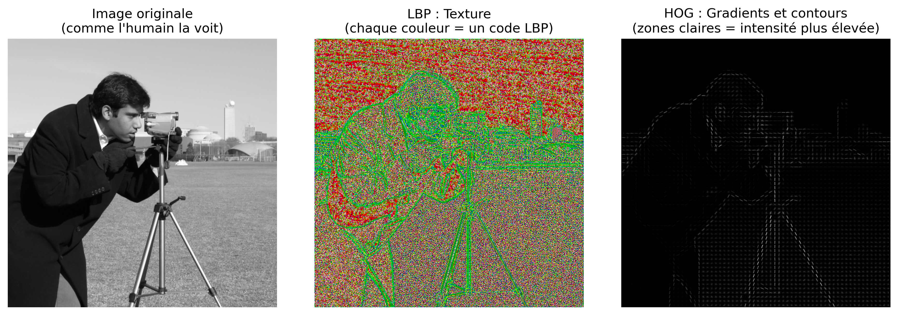
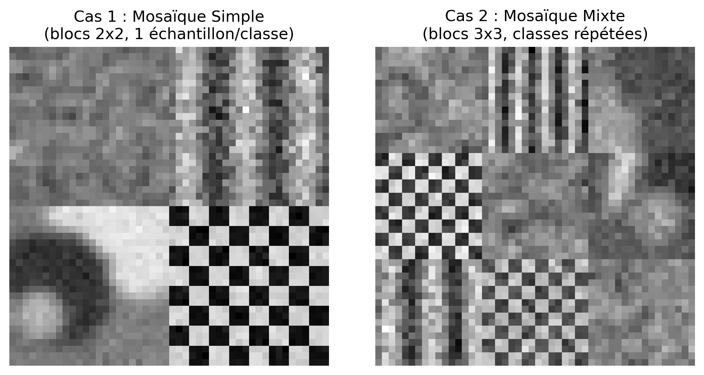

7Classification d’images et reconnaissance de formes
Dans le chapitre 6, la transition de la partie I vers la partie II a été présentée à travers deux applications qui exigeaient déjà des décisions automatisées : la reconnaissance de marques sur des feuilles de réponses (OMR) et la détection de défauts en inspection industrielle. Dans les deux cas, cependant, les décisions dépendaient de règles géométriques et de seuils définis manuellement, comme déterminer si un disque était suffisamment circulaire ou si une région était suffisamment sombre.
Ce chapitre formalise le problème plus général sous-jacent à ces applications : étant donné un ensemble d’exemples étiquetés, comment entraîner un système pour classifier automatiquement de nouvelles images ou régions d’intérêt ? Cette question est au cœur de la reconnaissance de formes, discipline qui fonde une grande partie des tâches modernes de vision par ordinateur, depuis la classification d’images jusqu’à la détection d’objets et la segmentation sémantique, explorées dans les chapitres suivants.
Seront étudiés les principaux descripteurs classiques d’image (couleur, texture et forme/gradient) ainsi que le classifieur k-plus proches voisins (k-Nearest Neighbors — k-NN), choisi pour sa simplicité conceptuelle et pour mettre en évidence, de manière directe, la relation entre l’espace des caractéristiques, les métriques de distance et les frontières de décision — des concepts qui demeurent centraux même dans les classifieurs fondés sur les réseaux de neurones profonds, étudiés dans le chapitre final de cette partie.
7.1 Objectifs du chapitre
À la fin de ce chapitre, l’étudiant devrait être capable de :
Comprendre le pipeline classique de reconnaissance de formes : acquisition, prétraitement, extraction de descripteurs, classification et évaluation ;
Extraire et interpréter des descripteurs classiques de couleur, de texture (Local Binary Patterns — LBP) et de forme/gradient (Histogram of Oriented Gradients — HOG) ;
Implémenter et entraîner un classifieur k-NN pour des tâches de classification d’images ;
Évaluer les classifieurs à l’aide de métriques telles que l’exactitude, la matrice de confusion, la précision et le rappel ;
Analyser l’effet du paramètre k et de la dimensionnalité de l’espace des caractéristiques sur la performance du classifieur ;
Reconnaître les limites des descripteurs artisanaux (hand-crafted features) et comprendre la motivation pour la transition, dans les chapitres suivants, vers des descripteurs appris automatiquement.
7.2 Configuration de l’environnement
Les exemples de ce chapitre utilisent des bibliothèques largement employées en traitement numérique des images, en vision par ordinateur et en apprentissage automatique. Le bloc ci-dessous installe les paquets nécessaires ; dans les environnements où ils sont déjà présents, l’exécution peut être ignorée.
import os, urllib.requesturl ="https://raw.githubusercontent.com/fzampirolli/pdi-vc/master/morph/config.py"ifnot os.path.exists("config.py"): urllib.request.urlretrieve(url, "config.py")import configconfig.setup()from morph import mmimport importlibimport subprocessimport sysdef setup_cap07():"""Installe les bibliothèques manquantes nécessaires pour ce chapitre (vision par ordinateur et apprentissage automatique).""" pacotes = {"cv2": "opencv-python","skimage": "scikit-image","numpy": "numpy","sklearn": "scikit-learn","matplotlib": "matplotlib","pandas": "pandas","seaborn": "seaborn","tabulate": "tabulate","kaleido": "kaleido", }for modulo, pacote in pacotes.items():if importlib.util.find_spec(modulo) isNone: resultado = subprocess.run( [sys.executable, "-m", "pip", "install", "-q", pacote] )if resultado.returncode !=0:print(f"[AVERTISSEMENT] Échec de l'installation de {pacote} (nécessaire pour le module {modulo}).")setup_cap07()# ==========================================================# Bibliothèques# ==========================================================# Calcul scientifiqueimport numpy as npimport pandas as pd# Visualisationimport matplotlib.cm as cmimport matplotlib.pyplot as pltimport seaborn as sns# Vision par ordinateurimport cv2from skimage import data as skdatafrom skimage.feature import hog, local_binary_pattern# Apprentissage automatiquefrom sklearn.datasets import load_digits, make_classificationfrom sklearn.model_selection import cross_val_score, train_test_splitfrom sklearn.neighbors import KNeighborsClassifierfrom sklearn.ensemble import RandomForestClassifierfrom sklearn.preprocessing import StandardScalerfrom sklearn.metrics import ( accuracy_score, classification_report, confusion_matrix, f1_score, precision_score, recall_score,)
7.3 Un Problème Concret : Classification des Fruits
Avant de présenter les fondements théoriques, considérons le problème suivant, qui servira d’exemple tout au long de ce chapitre pour illustrer les principaux concepts de la reconnaissance de formes.
Le scénario : Une ferme automatisée utilise un système de vision par ordinateur pour séparer les pommes, les bananes et les oranges sur des lignes d’emballage.
Le défi : Les fruits arrivent sur le tapis roulant dans différentes positions et orientations, sous des conditions d’éclairage qui peuvent varier. De plus, les feuilles, les ombres et les petites occlusions peuvent rendre leur identification difficile. Comment développer un système capable de les classer correctement ?
Une approche possible :
Extraire des descripteurs qui représentent des caractéristiques pertinentes des fruits :
Couleur : distribution prédominante des couleurs ;
Texture : différences à la surface de la peau ;
Forme : caractéristiques géométriques du contour.
Entraîner un classificateur en utilisant des exemples préalablement étiquetés.
Utiliser le modèle entraîné pour classer automatiquement de nouveaux fruits.
La Figure 7.1 illustre, de manière conceptuelle, comment différentes fruits peuvent être représentés dans un espace de caractéristiques tridimensionnel.
AstuceRéfléchissez avant de continuer
Si chaque fruit était représenté uniquement par les valeurs d’intensité de ses pixels, serait-il possible de les distinguer de manière fiable ? Quels types d’informations pourrait-on extraire de l’image pour faciliter cette tâche ?
Figure 7.1: Exemple motivationnel : différents fruits formant des regroupements distincts dans un espace de caractéristiques.
7.4 🗺️ Aperçu du Chapitre : Le Pipeline Classique de Classification d’Images
Avant de poursuivre, il est utile de présenter une vue d’ensemble intégrée de ce qui sera étudié. La Figure 8.1 illustre le flux général d’un système classique de classification d’images, depuis l’image d’entrée jusqu’à l’étape d’attribution du label final. Dans les sections suivantes, chacune des étapes de ce processus sera étudiée en détail.
Figure 7.2: Aperçu du pipeline classique de classification d’images : extraction de descripteurs (LBP, HOG), formation de l’espace des caractéristiques et classification via k-NN. Ne s’applique pas aux modèles d’apprentissage profond (CNN, YOLO), qui apprennent des features de bout en bout directement à partir des pixels. Source : élaboré avec l’aide de Gemini Notebook ({GOOGLE}, 2025).
NotePortée de ce chapitre
Dans ce chapitre, l’accent est mis exclusivement sur le classificateur k-NN, en raison de sa simplicité pédagogique et de sa capacité à illustrer de manière intuitive le concept d’espace des caractéristiques. D’autres classificateurs traditionnels largement utilisés en reconnaissance de formes — tels que les arbres de décision, les règles de classification et les machines à vecteurs de support (SVM) — sont discutés en profondeur dans Quilici-gonzalez (2014), notamment dans sa 2e édition, actuellement en production (QUILICI-GONZALEZ, 2026).
7.5 Fondements de la reconnaissance de formes
Un système de reconnaissance de formes a pour objectif d’attribuer une catégorie (étiquette) à une observation — une image entière, une région d’intérêt ou un signal — sur la base d’exemples préalablement étiquetés. De manière générale, ce processus est organisé selon les étapes suivantes :
Acquisition : obtention de l’image ou du signal à classer ;
Prétraitement : normalisation, suppression du bruit, correction géométrique ou d’éclairage — étapes déjà étudiées dans les chapitres précédents ;
Extraction de descripteurs (features) : transformation de l’image en un vecteur de caractéristiques de dimension fixe, qui représente les propriétés pertinentes pour la tâche de classification ;
Classification : application d’un modèle qui associe le vecteur de caractéristiques à une classe ;
Évaluation : analyse des performances du modèle sur un ensemble de données indépendant de celui utilisé pour l’entraînement.
L’ensemble de tous les vecteurs de caractéristiques possibles constitue l’espace de caractéristiques (feature space). Un bon descripteur produit des représentations qui rapprochent, dans cet espace, les observations d’une même classe et éloignent les observations de classes distinctes. Cette propriété favorise les méthodes de classification basées sur la proximité, comme le k-NN, et bénéficie également à divers autres classifieurs.
La Figure 7.1 illustre ce concept de manière schématique : chaque fruit est représenté par un point dans un espace de caractéristiques à trois dimensions (couleur, texture et forme). Bien que cet espace ne soit qu’une simplification didactique, il montre comment les échantillons d’une même classe tendent à former des regroupements, tandis que des classes différentes occupent des régions distinctes, facilitant ainsi la tâche de classification.
7.6 Extraction de descripteurs classiques
Avant la popularisation des réseaux de neurones profonds, les descripteurs d’image étaient, pour la plupart, conçus manuellement par des experts (hand-crafted features), sur la base de propriétés statistiques ou géométriques connues. Trois familles classiques sont particulièrement pertinentes :
Descripteurs de couleur : histogrammes d’intensité ou de teinte, qui capturent la distribution des valeurs de couleur d’une région, déjà introduits au Chapitre 3 via la fonction mm.hist ;
Descripteurs de texture : capturent des motifs locaux de répétition, de rugosité ou d’orientation, comme le Local Binary Patterns (LBP), étudié ci-après ;
Descripteurs de forme/gradient : décrivent la distribution des contours et des orientations du gradient, comme le Histogram of Oriented Gradients (HOG), largement utilisé dans la détection de personnes et d’autres objets.
Pour comparer l’information capturée par chaque approche, la Figure 7.3 montre comment différentes techniques « voient » la même image.
# Charger une image d'exempleimagem = skdata.camera()# Appliquer les descripteurslbp_img = local_binary_pattern( imagem, P=8, R=1, method="uniform" )# Convertir le LBP en RGB uniquement pour faciliter la visualisationlbp_norm = (lbp_img - lbp_img.min()) / (lbp_img.max() - lbp_img.min() +1e-8)lbp_rgb = (cm.nipy_spectral(lbp_norm)[..., :3] *255).astype("uint8")hog_features, hog_img = hog( imagem, orientations=9, pixels_per_cell=(8, 8), cells_per_block=(2, 2), visualize=True,)# Affichage standardisémm.show( [imagem, lbp_rgb, hog_img], titles=["Image originale\n(comme l'humain la voit)","LBP : Texture\n(chaque couleur = un code LBP)","HOG : Gradients et contours\n(zones claires = intensité plus élevée)", ], cols=3, figsize=(12, 4),)print("Observez comment chaque descripteur met en évidence des propriétés différentes :")print("• LBP : met en évidence les motifs locaux de texture.")print("• HOG : met en évidence les contours et les orientations des bords.")print("• Image originale : contient uniquement les valeurs d'intensité.")

Figure 7.3: Comparaison visuelle de différents descripteurs appliqués à la même image. Chaque descripteur révèle des aspects distincts de la scène.
Observez comment chaque descripteur met en évidence des propriétés différentes :
• LBP : met en évidence les motifs locaux de texture.
• HOG : met en évidence les contours et les orientations des bords.
• Image originale : contient uniquement les valeurs d'intensité.
7.6.1Local Binary Patterns (LBP)
Le LBP est un descripteur de texture qui code, pour chaque pixel central \(g_c\), la relation entre son intensité et celle des \(P\) voisins disposés dans un voisinage circulaire de rayon \(R\) :
\((x_c, y_c)\) sont les coordonnées du pixel central ;
\(g_c\) est l’intensité du pixel central ;
\(g_p\) est l’intensité du \(p\)-ième pixel voisin ;
\(P\) est le nombre de voisins considérés ;
\(R\) est le rayon du voisinage circulaire ;
\(p\) est l’indice du voisin, avec \(p = 0, 1, \ldots, P-1\) ;
\(s(z)\) est la fonction de seuillage définie dans l’équation, où \(z = g_p - g_c\) ; elle prend la valeur 1 lorsque \(z \geq 0\) et 0 lorsque \(z < 0\) ;
\(2^p\) correspond au poids binaire associé au \(p\)-ième voisin.
Le code LBP obtenu décrit le motif local de contraste autour du pixel. L’histogramme de ces codes forme un vecteur de caractéristiques compact pour représenter la texture de l’image (Figure 7.4). Dans ce chapitre, on utilise la variante uniforme, qui regroupe les motifs non uniformes dans une seule catégorie, réduisant la dimensionnalité et augmentant la robustesse du descripteur.
Figure 7.4: Histogramme des codes LBP de l’image du cameraman. Chaque barre représente la fréquence relative d’un code LBP, formant le vecteur de caractéristiques utilisé pour décrire la texture.
AstuceFonction local_binary_pattern
L’implémentation utilisée dans ce chapitre est fournie par la bibliothèque scikit-image :
P : nombre de voisins également espacés dans le voisinage circulaire ;
R : rayon du voisinage, en pixels ;
method : stratégie de codage. Dans ce chapitre, on utilise la valeur "uniform".
L’équation présentée précédemment décrit le LBP original. Dans l’implémentation retenue dans ce chapitre, l’option method="uniform" calcule initialement ce code, puis remappe les motifs non uniformes vers une seule catégorie, réduisant la dimensionnalité du descripteur et le rendant plus robuste aux petites variations locales.
La Figure 7.3 présente la représentation visuelle du LBP, tandis que la Figure 7.4 montre l’histogramme des codes LBP utilisé comme vecteur de caractéristiques.
Le Projet Pratique 2 (section Comparaison de Descripteurs pour la Classification de Textures) emploie le LBP dans la classification de différents types de texture synthétique.
7.6.2Histogram of Oriented Gradients (HOG)
Le HOG est un descripteur qui représente la forme d’un objet à travers la distribution des orientations du gradient local. Comme pour l’opérateur de Canny (Chapitre 6), on calcule initialement le gradient :
\(f(x,y)\) est l’intensité de l’image au pixel \((x,y)\) ;
\(\frac{\partial f}{\partial x}\) et \(\frac{\partial f}{\partial y}\) sont, respectivement, les dérivées partielles de l’image dans les directions horizontale et verticale ;
\(|\nabla f(x,y)|\) est la magnitude du vecteur gradient au pixel \((x,y)\), indiquant l’intensité de la variation locale de l’image ;
\(\theta(x,y)\) est l’orientation du vecteur gradient au pixel \((x,y)\), calculée par la fonction \(\operatorname{atan2}\), dont le résultat appartient à l’intervalle \((-\pi,\pi]\).
Bien que \(\theta(x,y)\), tel que calculé par la fonction \(\operatorname{atan2}\), appartienne à l’intervalle \((-\pi,\pi]\), l’implémentation standard du HOG utilise le gradient non signé (unsigned) : les orientations opposées (par exemple, \(0\) et \(\pi\)) sont traitées comme équivalentes, et les angles sont mappés sur l’intervalle \([0,\pi)\) avant la construction de l’histogramme. Ce choix rend le descripteur invariant à la direction du contraste (par exemple, un bord clair-sombre et un bord sombre-clair produisent la même orientation).
L’image est ensuite divisée en cellules (cells). Pour chaque cellule, on construit un histogramme des orientations du gradient, pondéré par la magnitude correspondante. La concaténation des histogrammes de toutes les cellules forme le vecteur de caractéristiques HOG, qui représente la distribution spatiale des orientations du gradient et capture des informations sur la forme et les contours de l’objet (Figure 7.5).
n =100plt.figure(figsize=(8, 3))plt.bar(range(n), hog_features[:n], width=0.9)plt.title("Primeiros componentes do vetor HOG")plt.xlabel(f"Índice do componente (0–{n-1}, de um total de {hog_features.shape[0]})")plt.ylabel("Valor normalizado")plt.grid(axis="y", alpha=0.3)plt.tight_layout()plt.show()
Figure 7.5: Premiers 100 composants du vecteur de caractéristiques HOG.
AstuceFonction hog
L’extraction du descripteur HOG est réalisée par la fonction :
orientations : nombre de divisions angulaires de l’histogramme des orientations dans chaque cellule ;
pixels_per_cell : taille, en pixels, de chaque cellule où l’histogramme est calculé ;
cells_per_block : nombre de cellules utilisées pour la normalisation du descripteur ;
visualize : lorsque True, retourne également une image illustrant les gradients utilisés par le HOG.
L’équation présentée précédemment décrit le calcul de la magnitude et de l’orientation du gradient, qui constituent la base du descripteur HOG. Dans l’implémentation adoptée dans ce chapitre, la fonction hog() utilise ces informations pour construire des histogrammes d’orientations dans chaque cellule de l’image, puis effectue la normalisation par blocs (cells_per_block), réduisant la sensibilité du descripteur aux variations d’éclairage et de contraste.
La Figure 7.3 présente la représentation visuelle du HOG, tandis que la Figure 7.5 illustre les premiers composants du vecteur de caractéristiques extrait de l’image.
Le Projet Pratique 1 (section Classification de Chiffres Manuscrits avec k-NN) compare les performances des descripteurs HOG avec l’utilisation directe des intensités des pixels comme vecteur de caractéristiques.
7.6.3 L’Impact de l’Échelle et la Normalisation des Caractéristiques
Le classificateur \(k\)-NN prend ses décisions en se basant sur la distance entre les vecteurs de caractéristiques. Par conséquent, l’échelle de chaque caractéristique influence directement le résultat de la classification. Si une variable présente des valeurs beaucoup plus grandes que les autres (par exemple, une intensité de couleur variant de \(0\) à \(255\), alors qu’un indice de circularité varie de \(0\) à \(1\)), elle tend à dominer le calcul de la distance, réduisant ainsi l’influence des autres descripteurs.
Pour éviter ce problème, on applique une étape de normalisation des caractéristiques, généralement au moyen de la standardisation (Z-score standardization). Dans cette procédure, chaque caractéristique a désormais une moyenne égale à zéro et un écart-type égal à un, rendant comparables des grandeurs mesurées à l’origine sur des échelles différentes.
La standardisation est réalisée par la transformation
\[
z = \frac{x - \mu}{\sigma},
\]
où :
\(x\) est la valeur originale de la caractéristique ;
\(\mu\) est la moyenne de cette caractéristique calculée sur l’ensemble d’entraînement ;
\(\sigma\) est l’écart-type de la caractéristique ;
\(z\) est la valeur standardisée.
Après cette transformation, toutes les caractéristiques possèdent une moyenne égale à zéro et un écart-type égal à un, ce qui leur permet de contribuer de manière équilibrée au calcul des distances.
AstuceClasse StandardScaler
La standardisation utilisée dans ce chapitre est réalisée par la classe StandardScaler, de la bibliothèque scikit-learn :
from sklearn.preprocessing import StandardScalerscaler = StandardScaler()X_norm = scaler.fit_transform(X)
où :
StandardScaler() : crée l’objet responsable de la standardisation ;
fit_transform(X) : calcule la moyenne et l’écart-type de chaque caractéristique de l’ensemble X et retourne la matrice standardisée.
En pratique, la méthode fit_transform() exécute deux étapes : d’abord (fit), elle estime la moyenne (\(\mu\)) et l’écart-type (\(\sigma\)) de chaque caractéristique ; ensuite (transform), elle applique la transformation de standardisation présentée précédemment à toutes les valeurs de la matrice d’entrée.
La Figure 7.6 montre l’effet de la normalisation. Visuellement, la distribution des points reste la même ; ce qui change, c’est l’échelle des axes. Sans normalisation, la caractéristique de plus grande magnitude domine le calcul des distances entre les échantillons. Après la standardisation, toutes les caractéristiques contribuent de manière équilibrée au calcul des distances utilisées par le classificateur \(k\)-NN.
# Dados sintéticos com escalas muito diferentesnp.random.seed(42)X_demo = np.random.randn(20, 2) * [100, 1]y_demo = np.array([0] *10+ [1] *10)print("Effet de la normalisation :")print(" Caractéristique 1 : échelle ≈ 100")print(" Caractéristique 2 : échelle ≈ 1")print("\nSans normalisation, la première caractéristique domine le calcul des distances.")print("Avec normalisation, les deux contribuent de manière équilibrée.")print("\nLa normalisation est essentielle lorsque les caractéristiques possèdent des échelles différentes.")fig, axes = plt.subplots(1, 2, figsize=(10, 4))# Sem normalizaçãoaxes[0].scatter( X_demo[y_demo ==0, 0], X_demo[y_demo ==0, 1], c="blue", label="Classe 0")axes[0].scatter( X_demo[y_demo ==1, 0], X_demo[y_demo ==1, 1], c="red", label="Classe 1")axes[0].set_title("Sem Normalização\n(escalas diferentes)")axes[0].set_xlabel("Característica 1 (escala 100)")axes[0].set_ylabel("Característica 2 (escala 1)")axes[0].legend()# Com normalizaçãoscaler = StandardScaler()X_norm = scaler.fit_transform(X_demo)axes[1].scatter( X_norm[y_demo ==0, 0], X_norm[y_demo ==0, 1], c="blue", label="Classe 0")axes[1].scatter( X_norm[y_demo ==1, 0], X_norm[y_demo ==1, 1], c="red", label="Classe 1")axes[1].set_title("Com Normalização\n(características balanceadas)")axes[1].set_xlabel("Característica 1")axes[1].set_ylabel("Característica 2")axes[1].legend()plt.tight_layout()plt.show()
Effet de la normalisation :
Caractéristique 1 : échelle ≈ 100
Caractéristique 2 : échelle ≈ 1
Sans normalisation, la première caractéristique domine le calcul des distances.
Avec normalisation, les deux contribuent de manière équilibrée.
La normalisation est essentielle lorsque les caractéristiques possèdent des échelles différentes.
Figure 7.6: Importância da normalização das características para o classificador k-NN.
7.7 📌 Carte conceptuelle
Jusqu’ici, ont été présentés les descripteurs classiques (LBP, HOG, pixels bruts) et la manière dont ils organisent les échantillons dans un espace de caractéristiques. La Figure 7.7 synthétise ce parcours et situe ces étapes dans le flux général d’un système classique de classification d’images, en indiquant également les étapes suivantes — classification (k-NN) et évaluation des résultats — qui seront formalisées dans les sections suivantes.
Figure 7.7: Carte conceptuelle du processus de classification d’images utilisant des descripteurs classiques (LBP, HOG, pixels bruts) et un classifieur traditionnel (k-NN). Ne s’applique pas aux modèles d’apprentissage profond (CNN, YOLO), qui apprennent des features end-to-end directement à partir des pixels.
7.8 Descripteurs en pratique
Après avoir pris connaissance des principaux descripteurs classiques, il est naturel de se demander comment ils influencent les performances d’un classificateur dans des situations proches de celles rencontrées en pratique.
Dans cette section, on compare l’utilisation de trois représentations distinctes des mêmes images : les intensités des pixels, les descripteurs LBP et les descripteurs HOG. Pour rendre l’expérience plus réaliste, on ajoute un bruit synthétique aux données, à des intensités différentes pour chaque descripteur — une forme simplifiée de simulation du fait qu’en pratique, différentes représentations tolèrent de manière inégale les imperfections de la capture (bruit du capteur, petites variations de position, etc.).
La Figure 7.8 présente les matrices de confusion obtenues pour chaque descripteur, permettant d’identifier dans quelles classes se produisent les principales erreurs de classification. L’interprétation de ces matrices a été introduite au Chapitre 1, lorsque les concepts de Vrai Positif (VP), Faux Positif (FP), Vrai Négatif (VN) et Faux Négatif (FN) ont été présentés. Ces concepts ont été explorés dans les EPs 01_02 (métriques de classification) et 01_03 (mean Average Precision – mAP), disponibles sur :
Dans ce chapitre, les matrices de confusion sont employées pour analyser comment différents descripteurs influencent les performances du classificateur.
Ensuite, la Figure 7.9 résume la précision globale obtenue par chaque descripteur.
Les résultats montrent que les performances du classificateur dépendent directement de la représentation choisie pour décrire les images. Alors que l’utilisation directe des intensités des pixels est plus sensible aux dégradations introduites, les descripteurs LBP et HOG préservent mieux les informations pertinentes pour la classification, ce qui se traduit par de meilleures performances dans ce scénario. Il est important de souligner que les niveaux de bruit appliqués à chaque descripteur ont été choisis uniquement à des fins pédagogiques, afin d’illustrer le principe général selon lequel des descripteurs plus élaborés peuvent être plus robustes aux dégradations — ce qui ne signifie pas que cette relation se vérifie toujours, comme l’étude de cas de la section suivante le démontrera.
AstuceComment l’expérience est réalisée
Comme l’objectif de cette section est de comparer uniquement l’effet des descripteurs, on génère un ensemble de données synthétiques simple : trois nuages de points gaussiens, centrés sur les mêmes valeurs de « couleur, texture et forme » déjà utilisées dans la Figure 7.1 — le même motif employé depuis le début du chapitre pour représenter les trois classes de fruits.
centros = {"Maçã": [0.8, 0.2, 0.9],"Banana": [0.3, 0.1, 0.2],"Laranja": [0.9, 0.8, 0.8],}n_por_classe =100X = np.vstack([ np.random.normal(centro, 0.12, (n_por_classe, 3))for centro in centros.values()])y = np.repeat(list(centros.keys()), n_por_classe)
où :
centros : dictionnaire contenant le point moyen de chaque classe dans l’espace des caractéristiques (couleur, texture, forme) ;
n_por_classe : nombre d’échantillons générés par classe ;
np.random.normal(centro, 0.12, (n_por_classe, 3)) : génère n_por_classe échantillons autour de chaque centre, avec un écart-type de 0,12 dans chaque dimension ;
np.repeat(list(centros.keys()), n_por_classe) : génère le vecteur d’étiquettes correspondant, dans le même ordre que les centres.
Ensuite, on utilise le flux d’entraînement et d’évaluation :
train_test_split(X, y, test_size=0.3) : divise les données en entraînement (70 %) et test (30 %) ;
KNeighborsClassifier(n_neighbors=5) : crée un classificateur \(k\)-NN avec \(k=5\) voisins ;
fit(X_train, y_train) : ajuste le modèle aux données d’entraînement ;
predict(X_test) : classe les échantillons de test ;
accuracy_score(y_test, y_pred) : calcule la précision ;
confusion_matrix(y_test, y_pred) : génère la matrice de confusion.
Dans cette expérience, l’ensemble d’entraînement, le classificateur et la méthode d’évaluation restent exactement les mêmes. La seule différence entre les expériences réside dans la représentation utilisée pour chaque image (pixels bruts, LBP ou HOG), permettant d’évaluer exclusivement l’influence du descripteur sur la performance du classificateur.
classes = ["Maçã", "Banana", "Laranja"]np.random.seed(42)# Mêmes centres de classes (couleur, texture, forme) utilisés dans l'# exemple précédent, maintenant réutilisés pour générer les données# synthétiques d'entraînement et de test de cette expérience.centros = {"Maçã": [0.8, 0.2, 0.9],"Banana": [0.3, 0.1, 0.2],"Laranja": [0.9, 0.8, 0.8],}n_por_classe =100X = np.vstack([ np.random.normal(centro, 0.12, (n_por_classe, 3))for centro in centros.values()])y = np.repeat(list(centros.keys()), n_por_classe)# Simuler des descripteurs avec différents niveaux de sensibilité au bruit.# Plus le bruit ajouté est élevé, plus la représentation tend à être mauvaise.descritores = {"Pixels Brutos": X +0.5* np.random.randn(*X.shape),"LBP": X +0.3* np.random.randn(*X.shape),"HOG": X +0.2* np.random.randn(*X.shape),}# Créer une seule figure avec 3 sous-graphiques côte à côte pour les matricesfig, axes = plt.subplots(1, 3, figsize=(14, 4))resultados = {}for idx, (nome, Xd) inenumerate(descritores.items()): X_train, X_test, y_train, y_test = train_test_split(Xd, y, test_size=0.3, random_state=42) knn = KNeighborsClassifier(n_neighbors=5) knn.fit(X_train, y_train) y_pred = knn.predict(X_test) acc = accuracy_score(y_test, y_pred) resultados[nome] = acc# Matrice de confusion dans le sous-graphique correspondant cm = confusion_matrix(y_test, y_pred, labels=classes) sns.heatmap( cm, annot=True, fmt="d", cmap="Blues", cbar=False, xticklabels=classes, yticklabels=classes, ax=axes[idx], ) axes[idx].set_title(f"{nome}\nAcurácia: {acc:.3f}", fontsize=11, fontweight="bold" ) axes[idx].set_xlabel("Classe Predita") axes[idx].set_ylabel("Classe Real")plt.tight_layout()plt.show()
Figure 7.8: Matrices de confusion obtenues par le classifieur k-NN utilisant trois descripteurs différents. Les lignes représentent la classe réelle (Pomme, Banane et Orange) et les colonnes la classe prédite. Plus la concentration de valeurs sur la diagonale principale est élevée, meilleure est la performance du descripteur.
# Comparaison visuelle sur une figure isoléeplt.figure(figsize=(6, 3.5))nomes =list(resultados.keys())acuracia =list(resultados.values())colors = ['#6366f1', '#f97316', '#22c55e']bars = plt.bar(nomes, acuracia, color=colors, width=0.5)plt.ylabel('Acurácia Global')plt.title('Desempenho Geral dos Descritores sob Ruído Realista', fontsize=12, fontweight='bold')plt.ylim(0.5, 1.0)plt.grid(axis='y', linestyle='--', alpha=0.5)# Ajouter les valeurs au-dessus des barres en utilisant round standard pour l'affichagefor bar, val inzip(bars, acuracia): plt.text(bar.get_x() + bar.get_width()/2, bar.get_height() +0.01,f'{val:.3f}', ha='center', fontweight='bold', fontsize=10)plt.tight_layout()plt.show()print("Analyse des résultats :")print("- Pixels bruts : sensibles aux variations locales d'éclairage et au bruit.")print("- LBP : bonne tolérance aux variations monotones de l'éclairage global.")print("- HOG : excellent pour les contours et les formes stables sous de petites fluctuations géométriques.")
Figure 7.9: Comparaison détaillée de l’exactitude globale dans un scénario réaliste. Observez comment les descripteurs extraits structurellement (LBP et HOG) surpassent l’utilisation des intensités pures des pixels bruts.
Analyse des résultats :
- Pixels bruts : sensibles aux variations locales d'éclairage et au bruit.
- LBP : bonne tolérance aux variations monotones de l'éclairage global.
- HOG : excellent pour les contours et les formes stables sous de petites fluctuations géométriques.
7.9 Um Problema Concreto : Simulation de Descripteurs de Fruits
Reprenant le problème de classification des fruits présenté au début du chapitre, chaque image peut être représentée par un vecteur de caractéristiques (feature vector) obtenu à partir de l’extraction de descripteurs de couleur, de texture et de forme. La Table 7.1 présente quelques descripteurs fréquemment utilisés dans les applications de Vision par Ordinateur, y compris des techniques introduites dans le Chapitre 3 et dans ce chapitre.
Table 7.1: Ensemble de descripteurs chromatiques, texturaux et géométriques utilisés pour représenter des images de fruits.
Caractéristique
Description
R, G, B
intensité moyenne des canaux rouge, vert et bleu
NC
intensité moyenne en niveaux de gris (grayscale)
LBP
descripteur de texture (Local Binary Pattern)
HOG
descripteur de forme (Histogram of Oriented Gradients)
Aire
nombre de pixels de l’objet
Périmètre
longueur du contour
Circularité
mesure de la circularité de l’objet
Rapport largeur/hauteur
proportion entre la largeur et la hauteur de la région
Dans cet exemple, chaque image est représentée par le vecteur
En pratique, LBP et HOG ne sont pas des valeurs scalaires, mais des histogrammes comportant des dizaines ou des centaines de composantes. Dans cette section, chacun d’eux est représenté par une valeur unique uniquement pour simplifier la présentation. Dans les applications réelles, ces positions seraient remplacées par les composantes complètes des histogrammes respectifs.
Dans les applications réelles, tous les descripteurs ne contribuent pas de manière égale à distinguer les classes. Certains fournissent des informations plus pertinentes, tandis que d’autres peuvent être redondants ou peu discriminatifs.
Pour reproduire ce scénario de manière contrôlée, on utilisera make_classification(), de la bibliothèque scikit-learn. La fonction génère un ensemble de données synthétiques dont les caractéristiques peuvent être interprétées comme des descripteurs d’images, permettant de définir combien d’entre elles seront informatives pour la classification.
Dans cet exemple, dix caractéristiques synthétiques sont générées, dont seulement sept (n_informative=7) participent à la séparation entre les trois classes. Les autres simulent des attributs peu informatifs ou redondants. La Figure 7.10 présente une représentation conceptuelle de ce processus.
Avant d’introduire l’algorithme qui sera étudié en détail dans ce chapitre, il convient de faire une observation : pour identifier, parmi les dix caractéristiques synthétiques, lesquelles sont les plus discriminatives — et ainsi sélectionner deux d’entre elles pour la visualisation en 2D —, on utilise un Random Forest uniquement comme outil auxiliaire de diagnostic. Le KNN, objet de ce chapitre, est présenté ci-après.
# Configuration pour la reproductionnp.random.seed(42)# Génération de données synthétiques avec des caractéristiques contrôléesX, y = make_classification( n_samples=300, n_features=10, n_informative=7, n_redundant=2, n_repeated=1, # Une caractéristique est une copie d'une autre n_classes=3, n_clusters_per_class=1, random_state=42,)# Créer une figure avec deux sous-graphiquesfig, (ax1, ax2) = plt.subplots(1, 2, figsize=(14, 5))# Sous-graphique 1 : Visualisation des classes en 2D (en utilisant deux caractéristiques informatives)# Identifier quelles caractéristiques sont les plus informativesrf = RandomForestClassifier(n_estimators=100, random_state=42)rf.fit(X, y)importancias = rf.feature_importances_caracteristicas_informativas = np.argsort(importancias)[-2:] # Les deux plus importantescores = {0: "#e74c3c", 1: "#f1c40f", 2: "#e67e22"} # Pomme, Banane, Orangerotulos = {0: "Maçã", 1: "Banana", 2: "Laranja"}for classe inrange(3): idx = y == classe ax1.scatter(X[idx, caracteristicas_informativas[0]], X[idx, caracteristicas_informativas[1]], c=cores[classe], label=rotulos[classe], alpha=0.6, s=50, edgecolors="white", linewidth=0.5)ax1.set_xlabel(f"Característica {caracteristicas_informativas[0]+1} (informativa)", fontsize=11)ax1.set_ylabel(f"Característica {caracteristicas_informativas[1]+1} (informativa)", fontsize=11)ax1.set_title("Classes no Espaço de Características\n(2 características informativas)", fontsize=12, fontweight="bold")ax1.legend(loc="upper right")ax1.grid(alpha=0.3)# Sous-graphique 2 : Importance des caractéristiquesbars = ax2.bar(range(1, 11), importancias, color="#4a90d9", alpha=0.7)ax2.set_xlabel("Índice da Característica", fontsize=11)ax2.set_ylabel("Importância", fontsize=11)ax2.set_title("Importância de cada Característica\npara a Classificação", fontsize=12, fontweight="bold")ax2.set_xticks(range(1, 11))ax2.grid(axis="y", alpha=0.3)# Colorer les barres pour mettre en évidence les caractéristiquescores_barras = ["#e74c3c"if i <7else"#95a5a6"for i inrange(10)]for bar, cor inzip(bars, cores_barras): bar.set_color(cor)# Ajouter une légendefrom matplotlib.patches import Patchlegenda_elements = [ Patch(facecolor="#e74c3c", label="Características Informativas (7)"), Patch(facecolor="#95a5a6", label="Características Redundantes (3)")]ax2.legend(handles=legenda_elements, loc="upper right")# Annoter le nombre de caractéristiques informativesax2.axhline(y=0.15, color="red", linestyle="--", alpha=0.3)ax2.text(0.5, 0.17, "Limiar de importância", fontsize=9, color="red", alpha=0.7)plt.tight_layout()plt.show()print("\n🔍 Analyse des données générées :")print(f" • Total d'échantillons : {X.shape[0]}")print(f" • Nombre de caractéristiques : {X.shape[1]}")print(f" • Caractéristiques informatives : 7 (colonnes 1 à 7 du graphique)")print(f" • Caractéristiques redondantes : 2 (colonnes 8 et 9)")print(f" • Caractéristiques répétées : 1 (colonne 10)")print(f" • Distribution des classes : {np.bincount(y)}")
Figure 7.10: Illustration du processus de génération de données synthétiques avec make_classification. À gauche, visualisation des trois classes dans un espace bidimensionnel formé par deux caractéristiques informatives. À droite, importance relative de chaque caractéristique pour la classification, montrant que seulement 7 des 10 caractéristiques sont effectivement discriminantes, tandis que les autres sont redondantes (2) ou répétées (1).
🔍 Analyse des données générées :
• Total d'échantillons : 300
• Nombre de caractéristiques : 10
• Caractéristiques informatives : 7 (colonnes 1 à 7 du graphique)
• Caractéristiques redondantes : 2 (colonnes 8 et 9)
• Caractéristiques répétées : 1 (colonne 10)
• Distribution des classes : [101 98 101]
7.10 Classificateur k-NN : Comment il fonctionne en interne
Le k-Nearest Neighbors (k-NN) est l’un des algorithmes de classification les plus simples et intuitifs de l’apprentissage automatique. Contrairement à de nombreux classificateurs, il ne construit pas explicitement un modèle pendant la phase d’entraînement. Au lieu de cela, il stocke les échantillons étiquetés et, lorsqu’un nouvel échantillon doit être classifié, il recherche ceux qui lui ressemblent le plus.
Le principe de l’algorithme repose sur l’hypothèse que des échantillons présentant des caractéristiques similaires ont tendance à appartenir à la même classe. Pour quantifier cette proximité, le k-NN utilise une mesure de distance entre les vecteurs de caractéristiques.
À titre d’exemple, considérons la Table 7.2, qui présente une version simplifiée du problème de classification des fruits utilisant seulement deux caractéristiques : l’intensité de la couleur et la circularité, toutes deux normalisées dans l’intervalle de 0 à 1.
Table 7.2: Exemple simplifié de classification de fruits utilisant deux caractéristiques normalisées.
Échantillon
Couleur
Circularité
Classe
Fruit 1
0,82
0,88
Pomme
Fruit 2
0,30
0,20
Banane
Fruit 3
0,88
0,85
Pomme
Fruit ? (test)
0,80
0,90
?
En observant uniquement ces deux caractéristiques, on remarque que le fruit de test est beaucoup plus proche des échantillons étiquetés comme Pomme que de l’échantillon étiqueté comme Banane. Dans la section suivante, cette notion intuitive de proximité sera formalisée au moyen d’une métrique de distance, utilisée par l’algorithme pour identifier les voisins les plus proches et décider de la classe du nouvel échantillon.
7.10.1 Métrique de distance
La proximité entre deux échantillons est généralement quantifiée par la distance euclidienne, définie par
\(x_i\) est un échantillon de l’ensemble d’entraînement ;
\(n\) est le nombre de caractéristiques ;
\(x_j\) et \(x_{i,j}\) représentent la \(j\)-ième caractéristique.
Dans l’implémentation de ce chapitre, \(x\) correspond à une ligne de X_test et \(x_i\) à une ligne de X_train. La méthode predict() calcule automatiquement la distance entre \(x\) et tous les échantillons d’entraînement.
Comme les plus petites distances correspondent aux Fruits 1 et 3, ces échantillons seront utilisés lors de l’étape de décision.
7.10.2 Règle de décision
Après avoir trié les distances, l’algorithme sélectionne les \(k\) voisins les plus proches. Soit \(N_k(x)\) cet ensemble. La classe prédite est donnée par
où \(y_i\) est le label de l’échantillon \(x_i\) et \(\hat y\) est la classe attribuée à l’échantillon de test.
Dans l’exemple, pour \(k=3\), les voisins sont Fruit 1 (Pomme), Fruit 3 (Pomme) et Fruit 2 (Banane). Comme Pomme reçoit deux votes, c’est la classe prédite.
AstuceClasse KNeighborsClassifier
Dans ce chapitre, l’algorithme est implémenté avec la classe KNeighborsClassifier de la bibliothèque scikit-learn :
from sklearn.neighbors import KNeighborsClassifierknn = KNeighborsClassifier(n_neighbors=3)knn.fit(X_train, y_train)y_pred = knn.predict(X_test)
où :
KNeighborsClassifier(n_neighbors=3) : définit la valeur de \(k\) ;
fit(X_train, y_train) : stocke les échantillons d’entraînement (X_train) et leurs étiquettes (y_train) ;
predict(X_test) : retourne les classes prédites pour les échantillons de X_test.
En interne, predict() exécute les étapes décrites précédemment : calcule les distances, identifie les \(k\) voisins les plus proches et détermine la classe par vote majoritaire.
La Figure 7.11 illustre cette procédure sur un ensemble bidimensionnel. La figure met en évidence les voisins utilisés lors de la classification, tandis que la console présente les étapes de l’algorithme : calcul des distances, tri, sélection des voisins, vote et prédiction de la classe.
def knn_passo_a_passo(X, y, x, k=3):"""Exécute les cinq étapes de l’algorithme k-NN. Paramètres : X (entraînement), y (étiquettes), x (test) et k (nombre de voisins). """# 1. Distances dist = [(np.linalg.norm(x-xi), yi, i) for i, (xi, yi) inenumerate(zip(X, y))]print(f"1. Distances calculées : {len(dist)}")# 2. Tri dist.sort(key=lambda t: t[0])print("2. Distances triées")# 3. Sélection vizinhos = dist[:k]print(f"3. {k} voisins les plus proches :")for d, c, _ in vizinhos:print(f" {d:.4f} → {c}")# 4. Vote votos = {}for _, c, _ in vizinhos: votos[c] = votos.get(c, 0) +1print("4. Votes :", votos)# 5. Décision classe =max(votos, key=votos.get)print("5. Classe prédite :", classe)return classe, vizinhos# Données d’exemplenp.random.seed(4)X = np.r_[np.random.randn(15,2)+[2,2], np.random.randn(15,2)+[-2,-2]]y = np.array(["Classe A"]*15+ ["Classe B"]*15)x = np.array([0.5,0.5])classe, vizinhos = knn_passo_a_passo(X, y, x)# Visualisationplt.figure(figsize=(5,5))for c, rotulo in [("Classe A","Classe A"), ("Classe B","Classe B")]: P = X[y==c] plt.scatter(P[:,0], P[:,1], s=80, label=rotulo)plt.scatter(*x, marker="*", s=220, edgecolors="black", label="Teste")for _, _, i in vizinhos: plt.scatter(*X[i], s=220, facecolors="none", edgecolors="black", linewidths=2) plt.plot([x[0], X[i,0]], [x[1], X[i,1]], "--", lw=1)plt.xlabel("Característica 1")plt.ylabel("Característica 2")plt.title(f"k-NN ($k=3$): classe predita = {classe}")plt.legend()plt.grid(alpha=.3)plt.axis("equal")plt.tight_layout()plt.show()
1. Distances calculées : 30
2. Distances triées
3. 3 voisins les plus proches :
1.0850 → Classe A
1.6379 → Classe B
1.6382 → Classe A
4. Votes : {np.str_('Classe A'): 2, np.str_('Classe B'): 1}
5. Classe prédite : Classe A
Figure 7.11: Classification d’un nouvel échantillon par l’algorithme k-NN. Le point de test (étoile) est classé à partir des trois voisins les plus proches, mis en évidence par des cercles.
7.10.3 Le rôle du paramètre \(k\)
Le paramètre \(k\) détermine combien de voisins participent à la décision de classification.
Les petites valeurs de \(k\) (par exemple, \(k=1\)) rendent le classificateur plus sensible aux bruits et aux variations locales, produisant des frontières de décision plus irrégulières et favorisant le surapprentissage (overfitting).
Les grandes valeurs de \(k\) produisent des frontières de décision plus lisses, mais peuvent réduire la sensibilité aux structures locales, favorisant le sous-apprentissage (underfitting).
Dans les problèmes à deux classes, il est courant d’utiliser des valeurs impaires de \(k\) afin de réduire l’occurrence d’égalités.
Un autre aspect important est la malédiction de la dimensionnalité (curse of dimensionality). À mesure que le nombre de caractéristiques augmente, les distances entre les échantillons tendent à devenir plus similaires, rendant difficile l’identification de voisins réellement représentatifs.
NoteRésumé
L’algorithme k-NN peut être résumé en trois étapes :
extraire le vecteur de caractéristiques du nouvel échantillon ;
identifier les \(k\) voisins les plus proches ;
classer l’échantillon selon la classe la plus fréquente parmi ces voisins.
Le simulateur de la Figure 7.12 permet d’explorer visuellement l’effet du paramètre \(k\) sur la frontière de décision.
📌 Simulateur : Frontière de décision du k-NNCliquez sur le canvas pour ajouter des points
Voisins (k)
3
Classe bleue
0
Classe rouge
0
Classe bleue
Classe rouge
La région colorée de fond représente la classe attribuée par l'algorithme à chaque point de l'espace.
Figure 7.12: Simulateur interactif de la frontière de décision du k-NN : ajoutez des points d’entraînement et ajustez la valeur de k pour observer l’effet sur la région de décision.
7.11 Projet Pratique 1 : Classification de Chiffres Manuscrits avec k-NN
Les sections précédentes ont présenté l’algorithme k-NN à travers un exemple simplifié de classification de fruits, n’utilisant que deux caractéristiques. Ci-après, le même algorithme est appliqué à un ensemble de données d’images, dans lequel chaque échantillon est représenté par un vecteur de plus grande dimension.
Comme étude de cas, on utilise la base publique load_digits, mise à disposition par la bibliothèque scikit-learn. Cet ensemble de données contient 1797 images de chiffres manuscrits des classes de 0 à 9, chacune ayant une résolution de \(8 \times 8\) pixels en niveaux de gris. Chaque image est représentée par un vecteur de 64 caractéristiques, correspondant aux intensités des pixels, et chaque vecteur possède une étiquette indiquant le chiffre correspondant.
La base load_digits est mise à disposition par la bibliothèque scikit-learn et est utilisée dans ce chapitre pour illustrer l’application de l’algorithme k-NN. En plus d’être disponible directement dans scikit-learn, elle dispense d’étapes supplémentaires d’obtention et de préparation des données, ce qui permet de concentrer l’attention sur l’implémentation et l’évaluation du classifieur.
La Figure 7.13 présente un échantillon des images de la base de données.
digits = load_digits()print(f"Total d'échantillons : {digits.data.shape[0]}, dimension du vecteur : {digits.data.shape[1]}")print(f"Classes : {[int(i) for i insorted(set(digits.target))]}")n_amostras =16imgs =list(digits.images[:n_amostras])imgs_titles = [str(label) for label in digits.target[:n_amostras]]mm.show(imgs, titles=imgs_titles, cols=8, figsize=(12, 4))
Figure 7.13: Échantillon de chiffres manuscrits de la base load_digits, utilisé comme étude de cas de classification.
7.11.1 Classification avec des vecteurs d’intensité
Dans cette première expérience, chaque image de dimension \(8 \times 8\) est représentée directement par les intensités de ses 64 pixels, sans extraction de descripteurs supplémentaires. Ainsi, chaque échantillon correspond à un vecteur de 64 caractéristiques, utilisé comme entrée du classifieur k-NN.
Ensuite, l’ensemble de données est divisé en sous-ensembles d’entraînement et de test, en préservant la proportion des dix classes au moyen du paramètre stratify=y. Le classifieur est entraîné avec \(k=3\) et évalué sur l’ensemble de test en utilisant la précision et la matrice de confusion présentée dans la Figure 7.14..
Figure 7.14: Matrice de confusion du classificateur k-NN entraîné avec des vecteurs d’intensité bruts (pixels).
7.11.2 Classification avec des descripteurs HOG
Dans l’expérience précédente, chaque image était représentée directement par les intensités de ses pixels. Dans cette section, cette représentation est remplacée par des descripteurs HOG (Histogram of Oriented Gradients), qui encodent des informations sur la distribution des orientations des gradients de l’image.
On conserve la même partition des données, le même classificateur k-NN et le même protocole d’évaluation, en modifiant uniquement la représentation des images. La Figure 7.15 compare les résultats obtenus avec des vecteurs d’intensité et avec des descripteurs HOG.
descritores_hog = np.array([ hog(img, orientations=8, pixels_per_cell=(4, 4), cells_per_block=(1, 1))for img in digits.images])print(f"Dimension du vecteur HOG : {descritores_hog.shape[1]}")Xh_treino, Xh_teste, yh_treino, yh_teste = train_test_split( descritores_hog, y, test_size=0.3, random_state=42, stratify=y)n_neighbors =3knn_hog = KNeighborsClassifier(n_neighbors=n_neighbors)knn_hog.fit(Xh_treino, yh_treino)pred_hog = knn_hog.predict(Xh_teste)acc_hog = accuracy_score(yh_teste, pred_hog)print(f"Précision (descripteur HOG, k={n_neighbors}) : {acc_hog:.4f}")plt.figure(figsize=(4, 3))plt.bar(["Pixels brutos", "HOG"], [acc_pixels, acc_hog], color=["#6366f1", "#f97316"])plt.ylim(0, 1.1) # Augmente la limite supérieure pour laisser de l'espaceplt.ylabel("Acurácia")plt.title("Comparação de Descritores")for i, v inenumerate([acc_pixels, acc_hog]): plt.text(i, v +0.02, f"{v:.3f}", ha="center") # Augmente le décalage verticalplt.tight_layout()
Figure 7.15: Comparaison de précision entre les descripteurs de pixels bruts et HOG pour le classificateur k-NN (k=3) sur la base de chiffres.
NotePourquoi cela se produit-il ?
Dans la Figure 7.15, le classifieur entraîné avec des vecteurs d’intensité des pixels atteint une précision plus élevée (\(0.987\)) que celui basé sur des descripteurs HOG (\(0.759\)). Ce résultat est lié aux caractéristiques de la base load_digits.
Les images ont une résolution de seulement \(8\times8\) pixels, sont approximativement centrées et présentent peu de variation d’éclairage, d’échelle et d’orientation. Dans ce scénario, les intensités des pixels préservent pratiquement toute l’information nécessaire pour distinguer les classes. En revanche, le HOG résume l’image en histogrammes d’orientations des gradients, réduisant une partie du détail spatial disponible dans les pixels d’origine.
Cette réduction d’information peut rendre difficile la séparation de chiffres visuellement similaires, comme 3 et 8 ou 4 et 9, surtout lorsque la résolution de l’image est faible.
Dans des problèmes avec des images de plus haute résolution ou sujettes à des variations d’éclairage, de position, d’échelle ou de petites déformations, des descripteurs comme le HOG tendent à mieux représenter la structure locale de l’image que les valeurs individuelles des pixels. Ainsi, cette expérience illustre un principe important de l’apprentissage automatique : la représentation des données doit être choisie en fonction des caractéristiques du problème et non de la complexité du descripteur.
7.12 Évaluation des Classifieurs
Dans les sections précédentes, la qualité du classifieur a été analysée à l’aide de l’exactitude et de la matrice de confusion. Dans cette section, ces outils sont complétés par des métriques utilisées pour l’évaluation des modèles et par une procédure permettant de sélectionner la valeur du paramètre \(k\).
L’exactitude correspond à la proportion d’échantillons correctement classifiés. Bien qu’elle soit une mesure simple et largement utilisée, elle peut s’avérer insuffisante lorsque les classes présentent des distributions très déséquilibrées.
À partir de la matrice de confusion — introduite dans le Chapitre 1 et utilisée tout au long de ce chapitre — des métriques par classe peuvent être calculées, comme la précision et le rappel :
où \(VP\), \(FP\) et \(FN\) représentent, respectivement, le nombre de vrais positifs, de faux positifs et de faux négatifs de la classe analysée. La précision quantifie la proportion de prédictions positives correctes, tandis que le rappel mesure la capacité du classifieur à identifier les exemples appartenant à la classe.
7.12.1 Choix de \(k\) par Validation Croisée
Dans les expériences précédentes, on a adopté \(k=3\) pour illustrer le fonctionnement de l’algorithme. Cependant, ce paramètre influence directement la performance du classificateur et, en pratique, doit être sélectionné à partir des données.
Une approche largement utilisée est la validation croisée (cross-validation), dans laquelle l’ensemble d’entraînement est divisé en partitions successives pour estimer la performance du modèle sur des données non utilisées pendant l’entraînement.
Le code suivant calcule la précision moyenne obtenue par validation croisée de cinq partitions (5-fold cross-validation) pour différentes valeurs de \(k\). La Figure 7.16 présente les résultats, permettant d’identifier la région où le classificateur atteint la meilleure performance.
valores_k =range(1, 16)acuracias_medias = []for k in valores_k: modelo = KNeighborsClassifier(n_neighbors=k) scores = cross_val_score(modelo, X, y, cv=5) acuracias_medias.append(scores.mean())melhor_k =list(valores_k)[int(np.argmax(acuracias_medias))]print(f"Meilleure valeur de k trouvée : {melhor_k} (précision moyenne={max(acuracias_medias):.4f})")plt.figure(figsize=(6, 4))plt.plot(list(valores_k), acuracias_medias, marker="o", color="#4f46e5")plt.axvline(melhor_k, color="#f97316", linestyle="--", label=f"melhor k = {melhor_k}")plt.xlabel("k")plt.ylabel("Acurácia média (validação cruzada)")plt.title("Seleção de k por Validação Cruzada")plt.legend()plt.grid(alpha=0.3)plt.tight_layout()
Meilleure valeur de k trouvée : 2 (précision moyenne=0.9672)
Figure 7.16: Précision moyenne par validation croisée (5 partitions) en fonction du paramètre k, pour la base de chiffres avec vecteurs d’intensité bruts.
7.12.2 Le compromis entre biais et variance : Diagnostic de surajustement et de sous-apprentissage
L’hyperparamètre \(k\) influence la complexité de la frontière de décision du classificateur k-NN et, par conséquent, sa capacité de généralisation. En termes généraux, de petites valeurs de \(k\) rendent le modèle plus sensible aux échantillons d’entraînement, tandis que des valeurs plus grandes produisent des frontières de décision plus lisses.
Ces comportements sont associés au compromis entre biais (bias) et variance (variance). De très petites valeurs de \(k\) tendent à augmenter le risque de surajustement (overfitting), surtout dans des ensembles de données bruités, alors que des valeurs très grandes peuvent conduire au sous-apprentissage (underfitting), réduisant la capacité du modèle à capturer les structures locales des données.
Alors que la Figure 7.16 n’a présenté que la précision moyenne obtenue par validation croisée, la Figure 7.17 compare les précisions d’entraînement et de test pour différentes valeurs de \(k\). Les régions mises en évidence sur le graphique représentent le comportement attendu de l’algorithme : un risque plus élevé de surajustement pour de petites valeurs de \(k\), une région intermédiaire qui produit souvent un bon équilibre entre biais et variance, et un risque plus élevé de sous-apprentissage pour de grandes valeurs de \(k\).
Cependant, ces régions doivent être interprétées uniquement comme une référence conceptuelle. Le comportement observé dépend des caractéristiques de l’ensemble de données. Sur la base load_digits, par exemple, les images présentent peu de variabilité et une bonne séparation entre les classes, de sorte que de petites valeurs de \(k\) peuvent afficher des performances similaires — voire supérieures — aux autres, sans montrer un surajustement significatif.
k_values =range(1, 16)train_acc, test_acc = [], []for k in k_values: knn = KNeighborsClassifier(n_neighbors=k).fit(X_treino, y_treino) train_acc.append(accuracy_score(y_treino, knn.predict(X_treino))) test_acc.append(accuracy_score(y_teste, knn.predict(X_teste)))plt.figure(figsize=(9,5))plt.plot(k_values, train_acc, "o-", lw=2, label="Treinamento")plt.plot(k_values, test_acc, "s-", lw=2, label="Teste")plt.axvspan(1, 3, color="#fca5a5", alpha=.25, label="Maior risco de overfitting")plt.axvspan(3,11, color="#86efac", alpha=.25, label="Compromisso entre viés e variância")plt.axvspan(11,15, color="#93c5fd", alpha=.25, label="Maior risco de underfitting")plt.xlabel("Número de vizinhos ($k$)")plt.ylabel("Acurácia")plt.xticks(k_values)plt.grid(alpha=.3)plt.legend(loc="upper right")plt.tight_layout()plt.show()maior_acc =max(test_acc)melhores_k = [k for k, a inzip(k_values, test_acc) if np.isclose(a, maior_acc)]print("Interprétation")print("- Petites valeurs de k : risque plus élevé de surajustement.")print("- Valeurs intermédiaires : meilleur compromis entre biais et variance.")print("- Grandes valeurs de k : risque plus élevé de sous-ajustement.")print("\nLes régions colorées représentent des tendances générales ;")print("le comportement observé dépend de l'ensemble de données.")print(f"\nPrécision maximale sur le test : {maior_acc:.3f}")print(f"Valeurs de k ayant atteint cette précision : {melhores_k}")
Figure 7.17: Précision sur les ensembles d’entraînement et de test pour différentes valeurs de \(k\). Les régions colorées représentent, de manière conceptuelle, les tendances de comportement du classifieur : risque plus élevé de surajustement (rouge), compromis entre biais et variance (vert) et risque plus élevé de sous-ajustement (bleu).
Interprétation
- Petites valeurs de k : risque plus élevé de surajustement.
- Valeurs intermédiaires : meilleur compromis entre biais et variance.
- Grandes valeurs de k : risque plus élevé de sous-ajustement.
Les régions colorées représentent des tendances générales ;
le comportement observé dépend de l'ensemble de données.
Précision maximale sur le test : 0.987
Valeurs de k ayant atteint cette précision : [1, 2, 3, 5]
7.13 Projet Pratique 2 : Comparaison de Descripteurs pour la Classification de Textures
Dans le Chapitre 6, la variance locale a été utilisée comme descripteur de texture pour détecter des anomalies sur des surfaces industrielles, en distinguant des échantillons conformes et défectueux. Dans ce projet, le problème est reformulé comme une tâche de classification multiclasse, dans laquelle différentes représentations de l’image sont utilisées comme entrée pour un classificateur.
Trois types de descripteurs seront considérés : les intensités des pixels, le Local Binary Patterns (LBP) et l’Histogram of Oriented Gradients (HOG). Pour chaque représentation, un vecteur de caractéristiques sera extrait et servira d’entrée à l’algorithme des \(k\) plus proches voisins (\(k\)-NN). À la fin, les précisions obtenues par chaque descripteur dans les conditions définies pour cette expérience seront comparées.
L’évaluation sera réalisée par validation croisée stratifiée en cinq partitions (5-fold stratified cross-validation). Dans cette procédure, l’ensemble de données est divisé en cinq sous-ensembles en préservant la proportion entre les classes. À chaque itération, une partition est utilisée pour le test et les quatre restantes pour l’entraînement, le processus étant répété jusqu’à ce que toutes les partitions aient été utilisées comme ensemble de test. À l’issue des cinq exécutions, la précision moyenne et l’écart-type sont calculés pour chaque descripteur.
L’ensemble de données est composé de trois classes de textures synthétiques : granulaire, obtenue à partir de bruit gaussien lissé ; rayée, formée par des motifs sinusoïdaux périodiques ; et tachetée, composée de régions circulaires superposées. Pour introduire de la variabilité entre les échantillons, toutes les images reçoivent une perturbation par bruit gaussien de faible intensité. La Figure 7.18 présente des exemples des trois classes utilisées dans l’expérience.
Figure 7.18: Échantillons synthétiques des trois classes de texture utilisées dans l’expérience de classification, générés avec un bruit gaussien et une variabilité intra-classe.
7.13.1 Pipeline d’extraction de caractéristiques et évaluation comparative
Pour comparer les performances des différentes formes de représentation des images, un ensemble de données équilibré contenant 60 échantillons par classe a été généré. À partir de cet ensemble, trois types de vecteurs de caractéristiques ont été extraits, chacun représentant des aspects distincts de l’information visuelle :
Pixels bruts : vecteur obtenu par l’aplatissement (flattening) de la matrice d’intensités de l’image, résultant en un vecteur de \(64 \times 64 = 4096\) attributs ;
Histogramme LBP uniforme : histogramme normalisé des fréquences des motifs locaux produits par l’opérateur LBP uniforme, composé de 10 attributs ;
Descripteur HOG : vecteur formé par des histogrammes de gradients orientés, qui représentent la distribution spatiale des orientations des contours, totalisant 128 attributs.
Ces descripteurs ayant des échelles et des dimensionalités distinctes, les vecteurs de caractéristiques sont standardisés à l’aide du StandardScaler, de sorte que chaque attribut présente une moyenne nulle et un écart-type unitaire. Cette étape évite que des attributs de plus grande amplitude n’influencent de manière disproportionnée le calcul des distances euclidiennes employé par le classificateur.
L’évaluation est réalisée à l’aide de l’algorithme \(k\)-NN avec \(k=5\), sous le même protocole de validation croisée stratifiée en cinq partitions décrit dans la section précédente. La précision moyenne obtenue sur les cinq exécutions, voir Figure 7.19, fournit une estimation plus stable des performances du classificateur, réduisant la dépendance à une seule division entre entraînement et test.
Figure 7.19: Précision moyenne obtenue par validation croisée (5-fold) pour les descripteurs de Pixels Bruts, LBP et HOG appliqués à la base de textures synthétiques.
NotePourquoi cela fonctionne-t-il ? — LBP comme représentation des textures
Le descripteur LBP représente la texture d’une image au moyen d’un histogramme normalisé qui comptabilise la fréquence des motifs locaux d’intensité. Plutôt que de stocker directement les valeurs des pixels ou leurs positions, cette représentation résume la distribution des microstructures présentes dans l’image, produisant un vecteur de caractéristiques compact.
Dans cette expérience, trois types de descripteurs ont été comparés : les pixels bruts, LBP et HOG. Les vecteurs formés par les pixels bruts préservent toutes les intensités de l’image, mais incorporent également des variations dues au bruit et aux petits déplacements spatiaux, ce qui peut rendre difficile la comparaison entre échantillons au moyen de la distance euclidienne.
Le descripteur HOG représente la distribution des orientations des gradients, étant approprié pour décrire les formes et les contours. Comme les images utilisées dans ce projet diffèrent principalement par les propriétés de texture, et non par la présence de contours bien définis, cette représentation tend à capturer moins d’informations discriminatives que le LBP.
Quant au LBP, il a été développé spécifiquement pour caractériser les motifs locaux de texture. Son histogramme décrit la fréquence des microstructures présentes dans l’image, indépendamment de leur position exacte, rendant la représentation moins sensible aux petites variations spatiales et aux changements monotones d’éclairage.
Bien que les histogrammes des différentes classes présentent des distributions distinctes, le bruit gaussien introduit lors de la génération des images augmente la variabilité entre les échantillons de la même classe et peut produire des zones de chevauchement dans l’espace des caractéristiques. Par conséquent, certaines textures peuvent être confondues par le classificateur. Néanmoins, lorsque les caractéristiques pertinentes pour distinguer les classes sont associées aux motifs locaux de texture, on s’attend à ce que des descripteurs conçus à cette fin, comme le LBP, produisent des représentations plus informatives que celles basées uniquement sur les intensités des pixels ou les orientations des gradients.
7.13.2 Diagnostic fin du classificateur : précision, rappel et F1-score
L’exactitude résume la performance du classificateur en une seule valeur, mais n’indique pas comment cette performance se répartit entre les différentes classes. Pour une analyse plus détaillée, on utilise des métriques calculées individuellement pour chaque classe.
La précision (precision) mesure la proportion d’échantillons classés comme appartenant à une classe qui lui appartiennent réellement. Le rappel (recall) mesure la proportion d’échantillons de la classe qui ont été correctement identifiés par le classificateur. Le F1-score correspond à la moyenne harmonique entre précision et rappel, fournissant un indicateur qui équilibre ces deux mesures.
Le rapport indique également le support (support), c’est-à-dire le nombre d’échantillons de chaque classe présents dans l’ensemble de test. Cette information est importante pour contextualiser les métriques, car les résultats obtenus sur un petit nombre d’échantillons tendent à présenter une plus grande variabilité.
La Figure 7.20 présente ces métriques pour les trois classes de texture. Ensemble, elles permettent d’identifier des différences de performance qui ne sont pas évidentes à partir de la seule exactitude. Par exemple, une classe peut présenter une précision élevée et un rappel plus faible, indiquant que le classificateur commet peu de faux positifs, mais ne parvient pas à identifier une partie des échantillons qui appartiennent réellement à cette classe. Ce type d’analyse aide à comprendre les limites du modèle et à identifier d’éventuelles stratégies pour son amélioration.
X_lbp_data = np.array(X_lbp)y_textura_data = np.array(y_textura)# Effectuer une division entraînement/test pour le rapport détailléXt_treino, Xt_teste, yt_treino, yt_teste = train_test_split( X_lbp_data, y_textura_data, test_size=0.3, random_state=42, stratify=y_textura_data)# Mettre à l'échelle les donnéesscaler = StandardScaler()Xt_treino_scaled = scaler.fit_transform(Xt_treino)Xt_teste_scaled = scaler.transform(Xt_teste)# Entraîner le classificateur k-NNknn_textura = KNeighborsClassifier(n_neighbors=5)knn_textura.fit(Xt_treino_scaled, yt_treino)y_pred = knn_textura.predict(Xt_teste_scaled)report = classification_report( yt_teste, y_pred, target_names=classes_textura, output_dict=True)print("=== RAPPORT DE CLASSIFICATION DÉTAILLÉ ===")print(f"{'Classe':<12}{'Precisão':>10}{'Revocação':>12}{'F1-score':>10}{'Suporte':>10}")for classe in classes_textura: r = report[classe]print(f"{classe:<12}{r['precision']:>10.2f}{r['recall']:>12.2f} "f"{r['f1-score']:>10.2f}{r['support']:>10.0f}")precision = precision_score(yt_teste, y_pred, average=None, labels=classes_textura)recall = recall_score(yt_teste, y_pred, average=None, labels=classes_textura)f1 = f1_score(yt_teste, y_pred, average=None, labels=classes_textura)fig, ax = plt.subplots(figsize=(10, 5))x = np.arange(len(classes_textura))width =0.25bars1 = ax.bar(x - width, precision, width, label='Precisão', color='#6366f1', alpha=0.8)bars2 = ax.bar(x, recall, width, label='Revocação', color='#f97316', alpha=0.8)bars3 = ax.bar(x + width, f1, width, label='F1-Score', color='#22c55e', alpha=0.8)ax.set_xlabel('Classe', fontsize=12)ax.set_ylabel('Score', fontsize=12)ax.set_title('Métricas por Classe - Classificação de Texturas', fontsize=14, fontweight='bold')ax.set_xticks(x)ax.set_xticklabels(classes_textura)ax.legend(loc='upper right')ax.set_ylim(0, 1.35)ax.grid(axis='y', alpha=0.3)for bars in [bars1, bars2, bars3]:for bar in bars: height = bar.get_height() ax.text(bar.get_x() + bar.get_width()/2., height +0.02,f'{height:.2f}', ha='center', va='bottom', fontsize=9)plt.tight_layout()plt.show()print("Interprétation des métriques :")print("- Précision : parmi les échantillons classés comme appartenant à la classe,","combien étaient corrects ?")print("- Rappel : parmi les échantillons qui appartiennent réellement à la classe, combien","ont été identifiés ?")print("- Score F1 : moyenne harmonique entre précision et rappel.")print("- Support : nombre d'échantillons réels de chaque classe présents dans l'ensemble de test.")print("\nLe support ne mesure pas la performance ; il indique simplement combien d'exemples de chaque","classe ont été \nutilisés dans l'évaluation.")
=== RAPPORT DE CLASSIFICATION DÉTAILLÉ ===
Classe Precisão Revocação F1-score Suporte
granular 0.67 0.78 0.72 18
listrada 0.55 0.61 0.58 18
manchada 1.00 0.72 0.84 18
Figure 7.20: Métriques d’évaluation détaillées pour le classificateur k-NN avec descripteurs LBP
Interprétation des métriques :
- Précision : parmi les échantillons classés comme appartenant à la classe, combien étaient corrects ?
- Rappel : parmi les échantillons qui appartiennent réellement à la classe, combien ont été identifiés ?
- Score F1 : moyenne harmonique entre précision et rappel.
- Support : nombre d'échantillons réels de chaque classe présents dans l'ensemble de test.
Le support ne mesure pas la performance ; il indique simplement combien d'exemples de chaque classe ont été
utilisés dans l'évaluation.
7.14 Limites des descripteurs artisanaux
Les expériences de ce chapitre montrent que les descripteurs classiques peuvent être assez efficaces dans les tâches de classification, mais présentent également des limites importantes :
Spécificité : chaque descripteur a été développé pour représenter un type d’information donné, comme la couleur, la texture ou la forme. Ainsi, un descripteur adapté à une tâche peut ne pas être le plus approprié pour une autre.
Dépendance aux hyperparamètres : la performance de descripteurs comme LBP et HOG dépend du choix de paramètres, tels que le rayon de voisinage, le nombre de points échantillonnés, la taille de la cellule et le nombre d’orientations, qui doivent être ajustés selon l’application.
Représentation limitée : les descripteurs de couleur, de texture et de gradient capturent des propriétés de bas niveau de l’image, mais ne représentent pas directement des concepts sémantiques plus complexes, comme les objets ou les scènes.
Malédiction de la dimensionnalité : des descripteurs trop étendus peuvent réduire l’efficacité des classificateurs basés sur la distance, comme le k-NN.
Ces limites motivent l’évolution des techniques étudiées dans les prochains chapitres. Le Chapitre 8 présente des méthodes classiques pour la détection et la correspondance de caractéristiques dans les images, tandis que le Chapitre 9 introduit les Réseaux de Neurones Convolutionnels, capables d’apprendre automatiquement des représentations adaptées à chaque tâche à partir des données.
7.15 Résumé
Dans ce chapitre, les fondements de la reconnaissance de formes appliquée aux images ont été présentés. Les principaux concepts étudiés ont été :
Pipeline de reconnaissance de formes : acquisition, prétraitement, extraction de descripteurs, classification et évaluation.
Descripteurs classiques : descripteurs de couleur, LBP pour la texture et HOG pour la forme, utilisés pour représenter différentes caractéristiques des images.
Normalisation des caractéristiques : standardisation (Z-score) afin d’éviter que les attributs de plus grande magnitude ne dominent le calcul des distances.
Classifieur k-NN : classification basée sur les \(k\) plus proches voisins dans l’espace des caractéristiques.
Choix du paramètre \(k\) : influence de la valeur de \(k\) sur les performances du classifieur et utilisation de la validation croisée pour sa sélection.
Évaluation des classifieurs : exactitude, matrice de confusion, précision, rappel et F1-score comme métriques complémentaires de performance.
Limites des descripteurs artisanaux : spécificité, dépendance aux hyperparamètres et difficulté à représenter des informations de haut niveau.
Les concepts ont été illustrés au moyen d’expériences menées sur la base publique load_digits, des textures synthétiques générées à des fins pédagogiques et des données simulées de descripteurs de fruits.
7.16 🤖 Utilisation du Gemini Notebook comme tuteur
Dans cette édition, le Gemini Notebook est présenté comme un outil de soutien à l’étude. Le système utilise exclusivement les documents mis à disposition par l’auteur comme source de connaissances, permettant d’explorer les concepts du chapitre au moyen de questions, de résumés et d’explications liés au matériel étudié.
Les réponses fournies par le Gemini Notebook peuvent contenir des inexactitudes ou des omissions. Si nécessaire, confirmez les informations en utilisant le matériel de ce chapitre et d’autres sources académiques fiables. L’exécution des exemples pratiques présentés tout au long du texte reste le meilleur moyen de consolider les concepts étudiés.
7.17 Lista de Exercícios
Os exercícios a seguir exploram e estendem os conceitos apresentados neste capítulo por meio de adaptações dos algoritmos implementados, análises experimentais e comparações entre diferentes abordagens.
(10%) Implemente um descritor de cor (histograma RGB ou HSV, com pelo menos 16 bins por canal) para as três classes de frutas simuladas na Figure 7.1. Treine um classificador k-NN com esse descritor, compare sua acurácia com a obtida pelos descritores LBP e HOG (Figure 7.9) e discuta em quais situações a informação de cor é mais discriminativa.
(15%) Investigue o efeito da normalização de características (Z-score) sobre o desempenho do k-NN em um espaço de atributos heterogêneo, combinando descritores de cor, LBP e HOG em um único vetor. Compare os resultados obtidos com e sem normalização para pelo menos três valores de \(k\).
(15%) Reproduza a análise de overfitting e underfitting da Figure 7.17 variando o tamanho do conjunto de treinamento (por exemplo, 20%, 50% e 80% da base load_digits). Discuta como a quantidade de exemplos influencia a escolha do valor de \(k\).
(15%) Estenda o Projeto Prático 2 adicionando uma quarta classe sintética de textura. Avalie precisão, revocação e F1-score para cada classe, seguindo o padrão da Figure 7.20, e analise o impacto da nova classe na matriz de confusão.
(15%) Implemente manualmente o classificador k-NN, sem utilizar sklearn:
sklearn.neighbors.KNeighborsClassifier,
completando a função knn_passo_a_passo apresentada no capítulo. Compare a acurácia e o tempo de execução da implementação manual com a implementação do scikit-learn em conjuntos de dados de tamanhos crescentes e relacione os resultados à maldição da dimensionalidade.
(15%) Investigue a influência dos parâmetros orientations, pixels_per_cell e cells_per_block do descritor HOG na base load_digits. Avalie pelo menos quatro combinações de parâmetros e discuta o compromisso entre dimensionalidade do descritor e desempenho do classificador.
(15%) Avalie a influência dos parâmetros \(P\) (número de vizinhos) e \(R\) (raio) do descritor LBP na classificação das texturas sintéticas do Projeto Prático 2, considerando \(P \in \{4,8,16\}\) e \(R \in \{1,2,3\}\). Analise como esses parâmetros afetam a capacidade discriminativa do descritor.
(Bônus – 10%) Implemente manualmente a validação cruzada k-fold para o classificador k-NN na base load_digits, sem utilizar cross_val_score, e compare os resultados com os obtidos pela implementação do scikit-learn apresentada na Figure 7.16..
Références du chapitre
La fondation théorique et les expériences présentées dans ce chapitre sont basées sur les références suivantes :
Gonzalez (2018), pour les fondements des descripteurs statistiques de texture et des opérations de prétraitement appliquées à l’extraction de caractéristiques.
Szeliski (2022), pour la présentation du pipeline classique de reconnaissance de formes, de l’extraction de descripteurs et de l’évaluation de classificateurs en Vision par Ordinateur.
Duda (2001), pour les fondements théoriques de la reconnaissance de formes, du classificateur k-NN et de la relation entre biais et variance.
Cover (1967), pour la formulation originale de l’algorithme des k plus proches voisins.
Ojala (2002), pour la formulation du descripteur Local Binary Patterns (LBP) et de sa variante uniforme, utilisée dans ce chapitre.
Dalal (2005), pour la formulation du descripteur Histogram of Oriented Gradients (HOG), employé dans la représentation de la forme et du contour.
Pedregosa (2011), pour l’implémentation du classificateur k-NN, des métriques d’évaluation et de la validation croisée dans la bibliothèque scikit-learn.
Quilici-gonzalez (2014), pour la présentation didactique de classificateurs traditionnels de Reconnaissance de Formes, tels que les Arbres de Décision, les Règles de Classification et les Machines à Vecteurs de Support (SVM), complémentaires au classificateur k-NN exploré dans ce chapitre.
Quilici-gonzalez (2026), pour la mise à jour et l’élargissement de ces contenus dans sa 2e édition, actuellement en production.
7.18 💻 Partie Pratique avec des Exercices de Programmation
La présente liste d’exercices de programmation (EP) consolide les formulations théoriques présentées tout au long du Chapitre 7 — Classification d’Images et Reconnaissance de Formes — à travers un parcours pratique appliqué. Contrairement à la manipulation directe des pixels des chapitres précédents, les EP de ce chapitre travaillent avec les grandeurs intermédiaires d’un pipeline réel de reconnaissance de formes — vecteurs de caractéristiques, distances, étiquettes prédites et réelles, codes binaires locaux et histogrammes d’orientation — permettant de valider manuellement chaque étape du raisonnement sans dépendre de bibliothèques externes d’apprentissage automatique.
L’enchaînement des exercices reproduit le flux conceptuel du chapitre : on commence par l’implémentation manuelle de la règle de décision du classificateur k-NN sur un petit espace de caractéristiques ; ensuite, on revisite, sous l’angle de la normalisation des caractéristiques, le classificateur implémenté dans le premier exercice de la liste ; on avance vers le calcul des métriques d’évaluation (matrice de confusion, précision et rappel) à partir des étiquettes prédites et réelles ; on poursuit avec le codage manuel du descripteur de texture LBP à partir d’un voisinage \(3\times3\) ; on approfondit le calcul de l’histogramme des orientations du descripteur HOG pour une seule cellule ; on avance ensuite vers l’intégration de l’extraction de descripteurs, de la classification k-NN et de l’évaluation multi-classe dans un pipeline complet de reconnaissance de textures ; et on conclut avec l’application de ce même pipeline sur une image réelle (format PGM), où le descripteur LBP est calculé directement sur les pixels d’une mosaïque de textures.
🎯 Objectif de ce Carnet
Le carnet permet de développer, valider, organiser et tester des solutions d’Exercices de Programmation (EPs) dans des environnements interactifs, comme Colab, avec les mêmes cas de test que Moodle, en les y copiant uniquement au moment d’enregistrer la note officielle.
Téléchargement
Téléchargez morph.py et testsuite.py en exécutant la cellule ci-dessous :
Pour évaluer les tests, exécutez TestSuite("EP07_01.extensão").run() dans une nouvelle cellule, en remplaçant l’extension par celle du langage utilisé (.py, .java, .c, .cpp, .js ou .r). Le système télécharge les cas de test depuis GitHub, exécute le programme et calcule automatiquement la note.
Pour tester directement le code Python, sans enregistrer de fichier, utilisez run_code(codigo) en passant le code sous forme de chaîne de caractères dans une variable codigo :
La bibliothèque morph.py propose deux versions pour la plupart des algorithmes : une version didactique (méthodes se terminant par 0), implémentée pas à pas en NumPy, et une version classique, basée sur les bibliothèques scikit-learn et scikit-image. Les implémentations didactiques sont utilisées dans les Exercices de Programmation (EPs), car elles ne dépendent pas de bibliothèques externes et s’exécutent dans la limite de mémoire de l’environnement VPL de Moodle. Les versions classiques, quant à elles, sont plus efficaces et recommandées pour des expériences dans des environnements tels que Colab et Jupyter Notebook, mais elles ne peuvent généralement pas être utilisées dans les EPs de Moodle, car la bibliothèque scikit-learn dépasse la mémoire disponible dans le VPL.
Lecture des données (readClasses, readDataset, readTrain, readTest)
Elles normalisent l’entrée des ensembles d’entraînement et de test, en retournant les matrices de caractéristiques (\(X\)) et les vecteurs d’étiquettes (\(y\)).
Classification (knn0 / knn)
Elles implémentent l’algorithme des k-plus proches voisins (k-NN) pour la classification binaire et multiclasse, en utilisant la distance euclidienne ou de Manhattan.
Normalisation (zscore0 / zscore)
Elles appliquent la normalisation z-score aux attributs, réduisant les différences d’échelle avant la classification.
Évaluation (confusion0 / confusion)
Elles calculent la matrice de confusion et des métriques telles que l’exactitude, la précision et le rappel, tant pour les problèmes binaires que multiclasses.
Descripteur de texture (lbp0 / lbp)
Elles calculent le Local Binary Pattern (LBP), permettant d’obtenir la carte LBP, le code d’un pixel ou l’histogramme d’une région de l’image.
Descripteur de forme (hog0 / hog)
Elles calculent le Histogram of Oriented Gradients (HOG), produisant des histogrammes des orientations des gradients pour représenter les informations de forme et de contour.
7.18.1 EP07_01 🟢 Classifieur k-NN Pas à Pas
Le KNeighborsClassifier de scikit-learn, utilisé tout au long du chapitre, dissimule derrière un simple appel (.fit / .predict) une règle de décision très simple : pour chaque nouvelle observation, calculer la distance à tous les exemples d’entraînement, sélectionner les \(k\) plus proches et voter pour la classe majoritaire parmi eux.
Avant de vous fier à la bibliothèque, vous êtes chargé d’implémenter cette règle de zéro, pour un espace de caractéristiques bidimensionnel, exactement comme le simulateur interactif de frontière de décision du chapitre le fait en interne à chaque clic de l’utilisateur.
7.18.1.1 📋 Directives d’implémentation
Quantité et paramètre : Lire l’entier \(N\) (nombre d’exemples d’entraînement) et l’entier impair \(k\) (nombre de voisins).
Exemples d’entraînement : Pour chacun des \(N\) exemples, lire trois valeurs : les coordonnées \(x\) et \(y\) (réelles) et l’étiquette \(r\) (entier, \(0\) ou \(1\)).
Requêtes : Lire l’entier \(Q\) (nombre de points de requête) puis les coordonnées \(x_q\), \(y_q\) (réelles) de chaque requête.
Distance : Pour chaque requête, calculer la distance euclidienne à tous les exemples d’entraînement : \[
d(x_q, x_i) = \sqrt{(x_q - x_i)^2 + (y_q - y_i)^2}.
\]
Sélection des voisins : Trier les exemples par distance croissante et sélectionner les \(k\) premiers. En cas d’égalité de distance à la frontière du k-ième voisin, départager par l’exemple lu en premier dans l’entrée (ordre de lecture stable).
Vote majoritaire : Compter les votes de chaque classe parmi les \(k\) voisins sélectionnés. S’il y a égalité dans le vote (seulement possible lorsque \(k\) est pair, ce qui ne devrait pas se produire selon la directive du point 1, mais traitez-le défensivement), attribuez la classe du voisin le plus proche parmi les classes à égalité.
Sortie : Pour chaque requête, dans l’ordre d’entrée, imprimer la classe prédite. À la fin, imprimer le total de requêtes classées comme classe 1.
7.18.1.2 📌 Contraintes computationnelles
Métrique fixe : utilisez exclusivement la distance euclidienne (pas la distance au carré) pour le tri, bien que le résultat de la comparaison soit le même.
k toujours impair : l’entrée garantit \(k\) impair et \(k \le N\) ; néanmoins, implémentez le départage du point 6 par robustesse.
Stabilité : lors du tri par distance, préservez l’ordre relatif des exemples ayant la même distance (tri stable).
7.18.1.3 🧠 Fondement théorique
Élément
Rôle dans le k-NN
Espace de caractéristiques
Ensemble de tous les vecteurs \((x, y)\) possibles
Distance euclidienne
Mesure de similarité entre observations
\(k\) petit
Frontière irrégulière, variance élevée
\(k\) grand
Frontière lisse, biais élevé
Vote majoritaire
Règle de décision \(\hat y = \operatorname{moda}\{y_i : x_i \in N_k(x)\}\)
7.18.1.4 📦 Spécification d’entrée et de sortie (VPL)
Entrée :
Ligne 1 : entiers \(N\) et \(k\), séparés par un espace.
Les \(N\) lignes suivantes : trois valeurs par ligne — \(x\), \(y\) (réelles) et \(r\) (entier \(\in \{0,1\}\)), séparées par un espace.
Ligne suivante : entier \(Q\).
Les \(Q\) lignes suivantes : deux valeurs par ligne — \(x_q\), \(y_q\) (réelles), séparées par un espace.
Sortie :
\(Q\) lignes, chacune avec la classe prédite (0 ou 1) pour la requête respective, dans l’ordre d’entrée.
Dernière ligne : Total classe 1 : X.
7.18.1.5 📌 Exemples
Entrée
Sortie
Observation
4 3
0 0 0
1 0 0
5 5 1
6 5 1
1
1 1
0
Total classe 1 : 0
Requête proche du groupe de classe 0.
4 1
0 0 0
1 0 0
5 5 1
6 5 1
2
0.9 0.1
5.5 5.1
0
1
Total classe 1 : 1
Avec \(k=1\), chaque requête hérite de la classe du voisin le plus proche.
🎮 Simulateur EP07_01 : Classificateur k-NN pas à pasVote majoritaire
Ajustez k et voyez quels exemples d'entraînement (triés par distance) participent au vote pour la requête fixe (★ à x = 3, y = 3).
–
Figure 7.21: Simulateur EP07_01 : Classifieur k-NN Pas à Pas
%%writefile EP07_01.py# Code Python
Writing EP07_01.py
TestSuite("EP07_01.py").run()
📥 Tentative : https://raw.githubusercontent.com/fzampirolli/pdi-vc/master/all/cap07/casos/EP07_01.cases
✅ Téléchargement réussi
📋 5 cas chargé(s) depuis casos/EP07_01.cases
🔍 Test de Python : EP07_01.py
⚠️ EP07_01.py : fichier vide (moins de 3 lignes). Tests ignorés.
7.18.2 EP07_02 🟡 Normalisation Z-score et Robustesse du k-NN à des Échelles Distinctes
Cet exercice revisite le classificateur implémenté dans l’EP07_01, cette fois sous l’angle discuté dans la section L’Impact de l’Échelle et la Normalisation des Caractéristiques du chapitre : le k-NN décide en se basant sur la distance entre les vecteurs, de sorte qu’une caractéristique mesurée sur une échelle beaucoup plus grande que les autres tend à dominer le calcul de la distance, même lorsqu’elle n’est pas la plus pertinente pour séparer les classes.
Un système d’inspection enregistre, pour chaque pièce, sa superficie (en pixels, pouvant atteindre des centaines ou des milliers) et sa circularité (toujours entre \(0\) et \(1\)). Vous êtes chargé de classer de nouvelles pièces par k-NN de deux manières — avec et sans la standardisation Z-score présentée dans le chapitre — et de rapporter dans quels cas les deux approches divergent.
7.18.2.1 📋 Directives d’Implémentation
Quantité et paramètre : Lire l’entier \(N\) (nombre d’exemples d’entraînement) et l’entier impair \(k\).
Exemples d’entraînement : Pour chacun des \(N\) exemples, lire trois valeurs : la superficie \(x_1\) (réelle), la circularité \(x_2\) (réelle) et l’étiquette \(r\) (entier, \(0\) ou \(1\)).
Requêtes : Lire l’entier \(Q\) puis les coordonnées \(x_1, x_2\) de chaque requête.
Classification sans normalisation : Pour chaque requête, classifiez-la par k-NN directement sur \((x_1, x_2)\), avec la distance euclidienne et les mêmes règles de départage que l’EP07_01 (ordre de lecture pour les distances à égalité ; voisin le plus proche entre les classes à égalité lors du vote).
Paramètres de normalisation : Calculer la moyenne \(\mu_j\) et l’écart-type populationnel\(\sigma_j\) (division par \(N\), non par \(N-1\) — la même convention adoptée par la classe StandardScaler) de chaque caractéristique \(j \in \{1,2\}\), exclusivement sur l’ensemble d’entraînement.
Standardisation : Transformez chaque caractéristique d’entraînement et de requête par \[
z_j = \frac{x_j - \mu_j}{\sigma_j}.
\] Si \(\sigma_j = 0\) (caractéristique constante dans l’entraînement), définissez \(z_j = 0\) pour tous les échantillons de cette caractéristique, évitant ainsi la division par zéro.
Classification avec normalisation : Répétez la classification k-NN du point 4, désormais sur les vecteurs standardisés \((z_1, z_2)\), avec les mêmes règles de départage.
Sortie : Pour chaque requête, dans l’ordre d’entrée, imprimer les deux classes prédites. À la fin, imprimer le nombre de requêtes où les deux classifications divergent.
7.18.2.2 📌 Contraintes Computationnelles
Ajustement uniquement sur l’entraînement :\(\mu_j\) et \(\sigma_j\) sont calculés uniquement à partir de l’ensemble d’entraînement et réappliqués aux requêtes — jamais recalculés à partir de celles-ci. Cette pratique évite la fuite de données (data leakage), mentionnée dans la section sur la normalisation du chapitre.
Écart-type populationnel : utilisez \(\sigma_j = \sqrt{\frac{1}{N}\sum_i (x_{i,j}-\mu_j)^2}\), et non la version échantillonnale (division par \(N-1\)).
Caractéristique constante : traitez \(\sigma_j = 0\) comme un cas spécial (point 6) ; aucune erreur de division par zéro ne doit survenir.
Règles de départage : réutilisez exactement les conventions de l’EP07_01, tant pour la sélection des \(k\) voisins que pour le vote majoritaire.
7.18.2.3 🧠 Fondements Théoriques
Élément
Rôle
Standardisation Z-score
Rééchelonne chaque caractéristique pour une moyenne de \(0\) et un écart-type de \(1\), rendant les échelles hétérogènes comparables
Ajustement (fit) uniquement sur l’entraînement
Garantit que l’évaluation sur les requêtes reflète uniquement ce que le modèle a appris lors de l’entraînement
Distance euclidienne sans normalisation
Dominée par la caractéristique de plus grande amplitude — ici, la superficie
Prédiction divergente
Met en évidence que l’échelle des caractéristiques, et pas seulement l’algorithme ou les données, peut déterminer la frontière de décision du k-NN
Cet exercice renforce, de manière contrôlée, la raison pour laquelle le StandardScaler est appliqué avant le k-NN tout au long du chapitre : sans cette étape, les caractéristiques de circularité — même étant hautement discriminatives — peuvent être pratiquement ignorées par le classificateur face à une caractéristique de superficie avec une amplitude des centaines de fois plus grande.
7.18.2.4 📦 Spécification d’Entrée et de Sortie (VPL)
Entrée :
Ligne 1 : Entiers \(N\) et \(k\), séparés par un espace.
Les \(N\) lignes suivantes : trois valeurs par ligne — \(x_1\), \(x_2\) (réelles) et \(r\) (entier \(\in \{0,1\}\)), séparées par un espace.
Ligne suivante : entier \(Q\).
Les \(Q\) lignes suivantes : deux valeurs par ligne — \(x_1\), \(x_2\) (réelles) de la requête, séparées par un espace.
Sortie :
\(Q\) lignes, au format SemNorm=<0|1> ComNorm=<0|1>, dans l’ordre d’entrée des requêtes.
Sans normalisation, la superficie (échelle des centaines) domine la distance et la requête est classée comme classe 1. Après standardisation, la circularité — beaucoup plus proche des échantillons de classe 0 — commence à peser de manière comparable, et la prédiction change pour 0.
2 1
0 0.5 0
100 0.5 1
1
60 0.5
SemNorm=1 ComNorm=1
Divergiu: 0
La circularité est constante dans l’entraînement (\(\sigma_2=0\)) ; selon la règle du point 6, \(z_2=0\) pour tous les échantillons, et la classification ne dépend que de la superficie dans les deux cas.
🎮 Simulateur EP07_02 : Normalisation Z-score et distance k-NNNormalisation des caractéristiques
Chaque exemple possède deux caractéristiques : aire (px) et circularité [0, 1]. Basculez la normalisation et observez le changement dans la classe prédite.
–
Figure 7.22: Simulateur EP07_02: Effet de la Normalisation Z-score sur la Distance k-NN
%%writefile EP07_02.py# Code Python
Writing EP07_02.py
TestSuite("EP07_02.py").run()
📥 Tentative : https://raw.githubusercontent.com/fzampirolli/pdi-vc/master/all/cap07/casos/EP07_02.cases
✅ Téléchargement réussi
📋 5 cas chargé(s) depuis casos/EP07_02.cases
🔍 Test de Python : EP07_02.py
⚠️ EP07_02.py : fichier vide (moins de 3 lignes). Tests ignorés.
7.18.3 EP07_03 🟡 Évaluation par Matrice de Confusion
Un classifieur binaire de qualité de soudure a été entraîné et testé sur une ligne de production. Pour chaque pièce inspectée, le système a enregistré le label réel (obtenu par un expert) et le label prédit par le classifieur, où 1 représente « défectueuse » et 0 représente « conforme ».
La direction qualité souhaite connaître non seulement l’exactitude du système, mais aussi sa précision (lorsque le système signale un défaut, à quelle fréquence a-t-il raison ?) et son rappel (parmi toutes les pièces réellement défectueuses, combien le système a-t-il réussi à identifier ?) — la distinction discutée dans la section d’évaluation des classifieurs du chapitre.
7.18.3.1 📋 Directives d’Implémentation
Quantité : Lire l’entier \(N\) (nombre de pièces inspectées).
Données de chaque pièce : Pour chacune des \(N\) pièces, lire deux entiers — le label réel \(y\) et le label prédit \(\hat y\) (tous deux \(\in \{0, 1\}\)).
Matrice de confusion : En considérant la classe 1 (défectueuse) comme positive, compter :
Cas dégénérés : Si \(VP+FP=0\) (aucune prédiction positive), afficher Precisao: indefinida. Si \(VP+FN=0\) (aucun cas positif réel), afficher Revocacao: indefinida.
Arrondi : Toutes les métriques numériques doivent être arrondies à 4 décimales (round half away from zero) uniquement lors de l’affichage.
7.18.3.2 📌 Contraintes Computationnelles
Convention de classe positive fixe : la classe 1 est toujours la classe positive dans cet exercice, indépendamment de sa fréquence relative.
Protection contre la division par zéro : implémentez les cas dégénérés du point 5 avant d’effectuer la division.
Ordre de sortie : suivez exactement l’ordre spécifié dans la section de sortie, même dans les cas dégénérés.
7.18.3.3 🧠 Fondement Théorique
Métrique
Question à laquelle elle répond
Sensible au déséquilibre ?
Exactitude
Quelle fraction des pièces a été classée correctement ?
Oui — peut masquer des erreurs dans la classe minoritaire
Précision
Parmi les pièces signalées comme défectueuses, combien le sont réellement ?
Pénalise les faux positifs
Rappel
Parmi les pièces réellement défectueuses, combien ont été détectées ?
Pénalise les faux négatifs
Dans un contexte industriel, un rappel faible est souvent plus grave qu’une précision faible : laisser passer une pièce défectueuse (faux négatif) tend à être plus coûteux que d’inspecter manuellement une bonne pièce signalée par erreur (faux positif).
7.18.3.4 📦 Spécification d’Entrée et de Sortie (VPL)
Entrée :
Ligne 1 : Entier \(N\).
Les \(N\) lignes suivantes : deux entiers par ligne — \(y\) et \(\hat y\), séparés par un espace.
Sortie (dans cet ordre exact) :
VP=<int> FP=<int> FN=<int> VN=<int>
Acuracia: <valeur ou métrique indéfinie>
Precisao: <valeur ou indéfinie>
Revocacao: <valeur ou indéfinie>
🎮 Simulateur EP07_03 : Précision x RappelLigne de production
Choisissez un scénario d'inspection et observez comment l'exactitude, la précision et le rappel réagissent différemment.
–
Figure 7.23: Simulateur EP07_03 : Précision x Rappel
%%writefile EP07_03.py# Code Python
Writing EP07_03.py
TestSuite("EP07_03.py").run()
📥 Tentative : https://raw.githubusercontent.com/fzampirolli/pdi-vc/master/all/cap07/casos/EP07_03.cases
✅ Téléchargement réussi
📋 5 cas chargé(s) depuis casos/EP07_03.cases
🔍 Test de Python : EP07_03.py
⚠️ EP07_03.py : fichier vide (moins de 3 lignes). Tests ignorés.
7.18.4 EP07_04 🟠 Codage Manuel du Descripteur LBP
La fonction local_binary_pattern de scikit-image, utilisée dans le projet de classification de textures, calcule automatiquement le code LBP de chaque pixel d’une image. Avant de l’utiliser comme une boîte noire, vous avez été chargé d’implémenter manuellement le calcul du code LBP classique (\(P=8\), \(R=1\)) pour le pixel central d’un voisinage \(3\times3\), exactement comme défini dans l’équation du chapitre.
En plus du code, le système d’inspection de textures doit également savoir si ce motif est uniforme — un motif est uniforme lorsque le nombre de transitions (\(0\to1\) ou \(1\to0\)) en parcourant les 8 bits circulairement (en revenant du dernier bit au premier) est au plus 2, propriété exploitée par la variante uniforme du LBP mentionnée dans le chapitre.
7.18.4.1 📋 Directives d’Implémentation
Quantité : Lire l’entier \(T\) (nombre de voisinages à traiter).
Données de chaque voisinage : Pour chacun des \(T\) voisinages, lire une matrice \(3\times3\) d’entiers (intensités), fournie en 3 lignes de 3 valeurs chacune. Le pixel central est la position [1][1].
Ordre des voisins : Parcourir les 8 voisins dans le sens horaire, en commençant par le coin supérieur gauche, dans l’ordre suivant des positions [ligne][colonne] : [0][0], [0][1], [0][2], [1][2], [2][2], [2][1], [2][0], [1][0]. C’est l’indice \(p = 0, 1, \ldots, 7\) de l’équation du LBP.
Fonction seuil : Pour chaque voisin \(p\) avec une intensité \(g_p\) et un centre \(g_c\), calculer \(s(g_p - g_c)\), qui vaut 1 si \(g_p \geq g_c\) et 0 sinon.
Transitions : En considérant la séquence circulaire de bits \(s_0, s_1, \ldots, s_7\) (dans l’ordre du point 3), compter combien de paires consécutives adjacentes dans la séquence circulaire (y compris la paire \(s_7, s_0\)) diffèrent entre elles.
Classification : Si le nombre de transitions est \(\le 2\), classer comme UNIFORME ; sinon, NAO_UNIFORME.
Sortie : Pour chaque voisinage, dans l’ordre d’entrée, imprimer le code LBP (entier décimal, \(0\)–\(255\)), le nombre de transitions et la classification.
7.18.4.2 📌 Contraintes Computationnelles
Ordre fixe des voisins : l’ordre du point 3 est obligatoire — l’inverser produit un code numériquement différent, même en représentant le même motif visuel.
Comparaison non stricte :\(s(z) = 1\) lorsque \(z \ge 0\) (le chapitre lui-même définit l’égalité comme incluse dans le cas 1).
Comptage circulaire : ne pas oublier la paire qui ferme le cycle (\(s_7\) avec \(s_0\)) ; ignorer cette paire est une erreur courante qui classe incorrectement les motifs uniformes.
7.18.4.3 🧠 Fondement Théorique
Motif (bits \(s_0\ldots s_7\))
Transitions
Interprétation
00000000 ou 11111111
0
Région homogène (tache claire ou sombre)
00001111
2
Bord simple entre deux régions
01010101
8
Texture de contraste alterné — non uniforme
Les motifs uniformes se concentrent dans les régions de texture lisse ou de bords simples ; les motifs non uniformes tendent à correspondre à du bruit haute fréquence. C’est pourquoi l’histogramme LBP uniforme, utilisé dans le projet de classification de textures, regroupe tous les motifs non uniformes dans un seul compartiment, réduisant la dimensionnalité du descripteur.
7.18.4.4 📦 Spécification d’Entrée et de Sortie (VPL)
Entrée :
Ligne 1 : Entier \(T\).
Pour chaque voisinage : 3 lignes avec 3 entiers chacune (matrice \(3\times3\)).
Sortie :
\(T\) lignes, au format LBP=<int> transicoes=<int> <UNIFORME|NAO_UNIFORME>.
7.18.4.5 📌 Exemples
Entrée
Sortie
Observation
1
10 10 10
10 50 10
10 10 10
LBP=0 transicoes=0 UNIFORME
Le centre est le plus clair ; tous les voisins génèrent un bit 0.
1
90 90 90
10 50 10
90 90 90
LBP=119 transicoes=4 NAO_UNIFORME
Voisins clairs et sombres alternés dans le voisinage.
🎮 Simulateur EP07_04 : Code LBP d'un voisinage 3×3P = 8, R = 1
Cliquez sur une cellule du voisinage pour basculer entre clair et sombre (le centre est fixe) et observez le code LBP résultant. Le libellé p indique l'indice de l'équation.
–
Figure 7.24: Simulateur EP07_04 : Code LBP d’un voisinage 3×3
%%writefile EP07_04.py# Code Python
Writing EP07_04.py
TestSuite("EP07_04.py").run()
📥 Tentative : https://raw.githubusercontent.com/fzampirolli/pdi-vc/master/all/cap07/casos/EP07_04.cases
✅ Téléchargement réussi
📋 5 cas chargé(s) depuis casos/EP07_04.cases
🔍 Test de Python : EP07_04.py
⚠️ EP07_04.py : fichier vide (moins de 3 lignes). Tests ignorés.
7.18.5 EP07_05 🔴 Histogramme des orientations d’une cellule HOG
La fonction hog de scikit-image, utilisée dans le projet de classification de chiffres, divise l’image en petites cellules et, pour chacune, construit un histogramme des orientations du gradient pondéré par la magnitude — exactement l’étape centrale décrite dans la section sur le descripteur HOG du chapitre.
Vous êtes chargé d’implémenter ce calcul pour une seule cellule, à partir des valeurs de magnitude et d’orientation du gradient déjà calculées pour chaque pixel de la cellule (ce qui évite le calcul des dérivées partielles).
7.18.5.1 📋 Directives d’implémentation
Dimensions : Lire les entiers \(n\) (la cellule a \(n \times n\) pixels) et \(B\) (nombre de compartiments de l’histogramme).
Magnitudes : Lire \(n\) lignes avec chacune \(n\) valeurs réelles, représentant \(|\nabla f(x,y)|\) pour chaque pixel de la cellule.
Orientations : Lire encore \(n\) lignes avec chacune \(n\) valeurs réelles, représentant \(\theta(x,y)\) en degrés, déjà converties dans l’intervalle non signé\([0^\circ, 180^\circ)\), comme conventionnellement utilisé par le HOG.
Compartiments : Les \(B\) compartiments couvrent \([0^\circ, 180^\circ)\) en bandes égales de largeur \(180/B\) degrés. Un pixel avec une orientation \(\theta\) appartient au compartiment \(\lfloor \theta / (180/B) \rfloor\) ; si cet indice est égal à \(B\) (possible uniquement lorsque \(\theta\) est exactement \(180^\circ\), ce qui ne devrait pas se produire selon la directive du point 3), utilisez le compartiment \(B-1\).
Histogramme brut : Pour chaque pixel, accumulez sa magnitude (et non son compte) dans le compartiment correspondant : \[
H[b] = \sum_{(x,y)\, :\, \text{bin}(\theta(x,y)) = b} |\nabla f(x,y)|.
\]
Normalisation L2 : Après avoir construit \(H\), normalisez-le pour obtenir \(\hat H\) : \[
\hat H[b] = \frac{H[b]}{\sqrt{\sum_{j=0}^{B-1} H[j]^2 + \epsilon}}, \qquad \epsilon = 10^{-6}.
\]
Sortie : Imprimez l’histogramme brut \(H\) (arrondi à 2 décimales) sur une ligne, suivi de l’histogramme normalisé \(\hat H\) (arrondi à 4 décimales) sur une autre ligne, tous deux avec les \(B\) valeurs séparées par des espaces, dans l’ordre des compartiments.
7.18.5.2 📌 Contraintes computationnelles
Binning non signé : l’intervalle des orientations est \([0,180)\), pas \([0,360)\) — les gradients dans des directions opposées (différence de \(180^\circ\)) contribuent au même compartiment, convention standard du HOG pour la détection d’objets.
Accumulation par magnitude, pas par compte : l’histogramme pondère chaque pixel par sa magnitude de gradient, il ne compte pas simplement combien de pixels tombent dans chaque compartiment.
Constante de stabilisation : le \(\epsilon = 10^{-6}\) dans le dénominateur de la normalisation évite la division par zéro lorsque la cellule est complètement homogène (toutes les magnitudes nulles).
7.18.5.3 📐 D’où proviennent les matrices d’entrée
Avant cet EP, chaque pixel \((x,y)\) de l’image passe par :
Comme le HOG ignore la polarité du contraste, l’angle est replié dans l’intervalle non signé :
\[
\theta = \theta_{\text{signé}} \bmod 180°
\]
En répétant cela pour tous les pixels d’une cellule \(n\times n\), on obtient les deux matrices d’entrée de cet exercice : les magnitudes\(|\nabla f|\) et les orientations\(\theta \in [0°,180°)\).
7.18.5.4 🧠 Fondement théorique
Étape
Rôle
Magnitude du gradient
Pondère la contribution de chaque pixel — les bords forts pèsent plus que le bruit faible
Orientation non signée
Rend le descripteur invariant à la polarité du contraste (clair→sombre vs. sombre→clair)
Histogramme par cellule
Résume la distribution locale des bords en un vecteur compact
Normalisation L2
Réduit la sensibilité du descripteur aux variations globales d’éclairage et de contraste
La concaténation des histogrammes normalisés de toutes les cellules de l’image — non implémentée dans cet exercice — forme le vecteur de caractéristiques HOG complet, utilisé comme entrée du classifieur k-NN dans le projet du chapitre.
7.18.5.5 📦 Spécification d’entrée et de sortie (VPL)
Entrée :
Ligne 1 : entiers \(n\) et \(B\).
Les \(n\) lignes suivantes : \(n\) magnitudes réelles chacune.
Ajustez B et suivez comment la matrice d'orientations (indépendante de celle des magnitudes) est mappée
vers les compartiments via bin = floor(θ / (180/B)), et comment les magnitudes sont additionnées dans chaque bin.
2
📄 Entrée (exactement comme le programme la lit via stdin)
🔢 Matrice des magnitudes |∇f|
📐 Matrice des orientations θ (degrés) — colorée par bin
📏 Où chaque θ tombe sur la règle [0°, 180°) — bin = floor(θ / largeur)
📊 Plages de chaque compartiment (largeur = 180° / B)
🧩 Chaque pixel : magnitude + orientation → bin
🧮 Calcul pas à pas (division entière + somme des magnitudes par bin)
Figure 7.25: Simulateur EP07_05 : Histogramme HOG d’une cellule (mapping des angles vers les bins)
%%writefile EP07_05.py# Code Python
Writing EP07_05.py
TestSuite("EP07_05.py").run()
📥 Tentative : https://raw.githubusercontent.com/fzampirolli/pdi-vc/master/all/cap07/casos/EP07_05.cases
✅ Téléchargement réussi
📋 5 cas chargé(s) depuis casos/EP07_05.cases
🔍 Test de Python : EP07_05.py
⚠️ EP07_05.py : fichier vide (moins de 3 lignes). Tests ignorés.
Cet exercice intègre les trois étapes centrales du chapitre dans un pipeline unique, reproduisant en miniature le Projet pratique 2 (classification de textures synthétiques par LBP) : un ensemble d’histogrammes de descripteurs déjà extraits (comme s’il s’agissait d’histogrammes LBP) est utilisé pour entraîner un classifieur k-NN, qui est à son tour évalué sur un ensemble de test indépendant au moyen d’une matrice de confusion multi-classe.
Contrairement à l’EP07_01, ici l’espace des caractéristiques a une dimension arbitraire \(H\) (la taille de l’histogramme), il existe plus de deux classes, et la métrique de distance est un paramètre d’entrée — ce qui permet de reproduire l’expérience de comparaison de métriques discutée dans le chapitre.
7.18.6.1 📋 Directives d’implémentation
Classes : Lire l’entier \(C\) (nombre de classes) suivi de \(C\) noms de classe (strings sans espace), dans l’ordre où ils doivent apparaître dans la matrice de confusion.
Configuration : Lire l’entier \(H\) (dimension des histogrammes), la string\(M\) (métrique : euclidiana ou manhattan) et l’entier impair \(k\).
Entraînement : Lire l’entier \(N\) puis \(N\) lignes, chacune contenant le nom de la classe suivi de \(H\) valeurs réelles (l’histogramme du descripteur).
Test : Lire l’entier \(Q\) puis \(Q\) lignes, chacune contenant le nom de la classe réelle suivi de \(H\) valeurs réelles (l’histogramme du descripteur de l’échantillon de test).
Distance : Pour chaque échantillon de test, calculer la distance à chaque exemple d’entraînement en utilisant la métrique \(M\) : \[
d_{\text{euclidiana}}(u,v) = \sqrt{\sum_{j=1}^{H}(u_j-v_j)^2}, \qquad
d_{\text{manhattan}}(u,v) = \sum_{j=1}^{H} |u_j - v_j|.
\]
Classification k-NN : Sélectionner les \(k\) exemples d’entraînement les plus proches (départage des distances par l’ordre de lecture, comme dans l’EP07_01) et classer par la classe majoritaire parmi eux. En cas d’égalité de vote entre deux ou plusieurs classes, choisir celle qui apparaît en premier dans la liste des classes du point 1.
Matrice de confusion : Construire une matrice \(C \times C\) où la ligne correspond à la classe réelle et la colonne à la classe prédite, en suivant l’ordre des classes du point 1.
Précision : Calculer la précision globale comme le rapport entre les succès et \(Q\).
Sortie : Pour chaque échantillon de test, dans l’ordre d’entrée, imprimer la classe prédite. Ensuite, imprimer la matrice de confusion (une ligne par classe réelle, valeurs séparées par des espaces, dans l’ordre des classes). Enfin, imprimer la précision arrondie à 4 décimales.
7.18.6.2 📌 Contraintes computationnelles
Métrique sélectionnable : implémenter les deux distances ; la métrique \(M\) définit celle utilisée pour toute l’exécution (il n’est pas possible de mélanger les métriques dans le même appel).
Départage de vote déterministe : le critère du point 6 (ordre de la liste des classes) doit être suivi même lorsque l’égalité implique plus de deux classes.
Indépendance de l’entraînement et du test : il n’est pas nécessaire de vérifier que les échantillons de test n’apparaissent pas dans l’entraînement — supposer que l’entrée est valide.
7.18.6.3 🧠 Fondement théorique
Étape de l’exercice
Étape correspondante dans le chapitre
Histogrammes d’entraînement/test déjà extraits
descritor_lbp appliqué aux textures synthétiques
Distance euclidienne ou Manhattan
Paramètre metric du KNeighborsClassifier
Vote majoritaire avec \(k\) voisins
KNeighborsClassifier.predict
Matrice de confusion \(C\times C\)
confusion_matrix de scikit-learn
Précision globale
accuracy_score de scikit-learn
Cet exercice met en évidence, de manière contrôlée, un résultat discuté dans le chapitre : le choix de la métrique de distance et de la valeur de \(k\) peut modifier la classe prédite pour un même échantillon, même en maintenant fixe le descripteur utilisé — renforçant que, dans la reconnaissance de formes classique, le descripteur, la métrique et le classifieur forment un système interdépendant, et non des pièces isolées.
7.18.6.4 📦 Spécification d’entrée et de sortie (VPL)
Entrée :
Ligne 1 : entier \(C\) suivi de \(C\) noms de classe.
Ligne 2 : entier \(H\), string\(M\) et entier \(k\).
Ligne 3 : entier \(N\).
Prochaines \(N\) lignes d’entraînement : nom de la classe suivi de \(H\) réels.
Ligne suivante : entier \(Q\).
Prochaines \(Q\) lignes de test : nom de la classe réelle suivi de \(H\) réels.
Sortie :
\(Q\) lignes avec la classe prédite de chaque échantillon de test, dans l’ordre d’entrée.
\(C\) lignes avec la matrice de confusion (une ligne par classe réelle).
Avec \(k=1\), chaque test est classé par le voisin d’entraînement le plus proche.
Note
Ce simulateur utilise un ensemble simplifié de 3 classes (granulaire, striée, tachetée) sur des points 2D fictifs, uniquement pour illustrer le pipeline de vote, de départage et de matrice de confusion du k-NN. Dans le cadre du EP07_07, vous appliquerez cette même logique à une mosaïque d’image réelle, qui introduit une quatrième classe (échiquier) et remplace les points 2D par des histogrammes LBP extraits directement des pixels de l’image.
Choisissez la métrique, la valeur de k et l'échantillon de test (★). Voyez les k plus proches voisins, le vote,
le départage si nécessaire, et comment cela se propage à la matrice de confusion et à la précision de l'ensemble entier.
Métrique (M)
Voisins (k)
Échantillon de test (★)
📏 Distances jusqu'à l'échantillon de test (triées) — #i = ordre de lecture dans la liste d'entraînement (survolez)
🗳️ Vote parmi les k voisins
📋 Matrice de confusion et précision — exécution du pipeline sur les 3 échantillons de test
Figure 7.26: Simulateur EP07_06 : Pipeline k-NN Multi-Classe (vote, départage et matrice de confusion)
%%writefile EP07_06.py# Code Python
Writing EP07_06.py
TestSuite("EP07_06.py").run()
📥 Tentative : https://raw.githubusercontent.com/fzampirolli/pdi-vc/master/all/cap07/casos/EP07_06.cases
✅ Téléchargement réussi
📋 5 cas chargé(s) depuis casos/EP07_06.cases
🔍 Test de Python : EP07_06.py
⚠️ EP07_06.py : fichier vide (moins de 3 lignes). Tests ignorés.
7.18.7 EP07_07 ⚫ Classification réelle d’une mosaïque de textures via LBP + k-NN
Dans les exercices précédents, le descripteur LBP (EP07_04) et le classifieur k-NN multiclasse (EP07_06) ont été étudiés séparément, toujours à partir de données déjà fournies en entrée — voisinages \(3\times3\) isolés ou histogrammes préalablement extraits. Dans cet exercice de clôture du chapitre, le programme devra lire une image réelle, au format PGM ASCII (P2), calculer le descripteur LBP directement à partir des pixels, puis classer chaque région au moyen du k-NN, reproduisant ainsi, à échelle réduite, le flux complet d’un système de reconnaissance de textures. Cette approche anticipe également l’idée de classification par mosaïque de régions, liée à la segmentation sémantique étudiée dans un chapitre ultérieur.
Le simulateur interactif de l’EP07_06 n’utilisait que trois classes (granular, listrada et manchada) représentées par des points bidimensionnels fictifs. Dans cet exercice, une quatrième classe, xadrez, est ajoutée, et les points sont remplacés par des histogrammes LBP extraits d’une image réelle.
L’image d’entrée est une mosaïque formée d’une grille \(G\times G\) de blocs carrés de \(S\times S\) pixels. Chaque bloc contient un échantillon de l’une des quatre classes de texture synthétique du chapitre : granular, listrada, manchada ou xadrez (motif en damier avec intensités alternées). Comme dans les autres exercices du livre, le chargement de l’image est réalisé par la fonction didactique mm.readImg.
AstucePourquoi une mosaïque unique, et non plusieurs images ?
L’entrée regroupe les \(G \times G\) échantillons de texture dans un seul fichier PGM, uniquement pour simplifier la lecture des données et éviter l’ouverture de plusieurs fichiers. Pour l’algorithme, cela ne modifie pas le traitement : chaque bloc est traité de manière indépendante, comme s’il s’agissait d’une image isolée. La seule exception est l’exclusion de la bordure (point 4 ci-dessous).
7.18.7.1 📋 Directives d’implémentation
Lecture des dimensions de l’image
Lire, via l’entrée standard, deux lignes contenant respectivement le nombre de lignes \(L\) et le nombre de colonnes \(C\) de la mosaïque (tous deux multiples de la taille de bloc \(S\), avec \(L=C\)).
Chargement de l’image
Utiliser la fonction didactique
f = mm.readImg(L, C)
pour lire les \(L \times C\) valeurs d’intensité (niveaux de gris, uint8) de la mosaïque.
Paramètres de la grille
Lire l’entier \(G\) (nombre de blocs par côté) et l’entier \(S\) (taille du côté de chaque bloc, en pixels), satisfaisant \(L = C = G \times S\).
Calcul du code LBP par pixel
Pour chaque pixel intérieur de l’image (c’est-à-dire ne se trouvant pas sur la bordure globale de f — ligne ou colonne \(0\) ou \(L-1\)/\(C-1\)), calculer le code LBP avec \(P=8\) voisins et rayon \(R=1\), en parcourant les voisins dans le sens horaire à partir du coin supérieur gauche, exactement comme dans l’EP07_04 : [lin-1][col-1], [lin-1][col], [lin-1][col+1], [lin][col+1], [lin+1][col+1], [lin+1][col], [lin+1][col-1], [lin][col-1].
Les pixels sur la bordure globale de l’image n’ont pas de voisinage complet et doivent être ignorés (ils ne contribuent à aucun histogramme). Cela inclut les pixels de bordure qui tombent à l’intérieur d’un bloc (l’exclusion est toujours relative à la bordure de l’image entière, et non à celle de chaque bloc).
Histogramme LBP uniforme par bloc (10 compartiments)
Pour chaque bloc \((i,j)\) de la grille (\(i,j = 0,\ldots,G-1\)), accumuler, parmi ses pixels valides (point 4), un histogramme \(H^{(i,j)}\) de \(10\) compartiments :
En considérant la séquence circulaire de bits \(s_0,\ldots,s_7\) du pixel (même règle de transitions que l’EP07_04) : si le nombre de transitions est \(\le 2\) (motif uniforme), le pixel contribue au compartiment \(\operatorname{popcount}(s_0,\ldots,s_7) \in \{0,\ldots,8\}\) (nombre de bits égaux à 1) ;
Sinon (motif non uniforme), le pixel contribue au compartiment \(9\).
À la fin, normaliser l’histogramme de chaque bloc en le divisant par le nombre de pixels valides qu’il contient, obtenant \(\hat H^{(i,j)}\), avec \(\sum_{b=0}^{9} \hat H^{(i,j)}[b] = 1\).
Prototypes d’apprentissage
Lire l’entier \(Ncl\) (nombre de classes) suivi de \(Ncl\) noms de classes (ordre définissant la matrice de confusion et le départage des votes, comme dans l’EP07_06) ; ensuite, lire la chaîne\(M\) (métrique : euclidiana ou manhattan) et l’entier impair \(k\) ; enfin, lire l’entier \(N\) (nombre de prototypes) et, pour chacun, le nom de la classe suivi de \(10\) valeurs réelles (histogramme prototype déjà normalisé).
Classification k-NN de chaque bloc
Pour chaque bloc, calculer la distance de \(\hat H^{(i,j)}\) à chacun des \(N\) prototypes, en utilisant la métrique \(M\) (mêmes formules que l’EP07_06). Sélectionner les \(k\) prototypes les plus proches (départage des distances par l’ordre de lecture des prototypes) et classer selon la classe majoritaire (départage des votes par l’ordre des classes du point 6).
Étiquettes réelles et évaluation
Lire, sur une seule ligne, les \(G \times G\) noms de classes réels de chaque bloc, dans l’ordre de lecture par ligne de la grille (bloc \((0,0)\), \((0,1)\), …, \((0,G-1)\), \((1,0)\), …). Construire la matrice de confusion \(Ncl \times Ncl\) (ligne = classe réelle, colonne = classe prédite) et l’exactitude globale.
Sortie
Imprimer, pour chaque bloc (dans le même ordre de lecture que les étiquettes réelles du point 8), la classe prédite. Ensuite, imprimer la matrice de confusion (une ligne par classe réelle, dans l’ordre du point 6). Enfin, imprimer l’exactitude, arrondie à 4 décimales.
7.18.7.2 📌 Contraintes informatiques
Descripteur fixe :\(P=8\), \(R=1\) et \(10\) compartiments (selon le point 5) sont fixes dans cet exercice — ils ne sont pas lus depuis l’entrée.
Exclusion de bordure globale, non de bloc : un pixel à la limite entre deux blocs, mais à l’intérieur de l’image, est valide et contribue normalement à l’histogramme du bloc auquel il appartient.
Ordre de lecture comme critère de départage : tant le départage des distances (point 7) que celui des votes (point 7) suivent exactement les mêmes conventions que l’EP07_01 et l’EP07_06.
Prototypes en entrée, non appris : contrairement au Projet Pratique 2, les histogrammes d’apprentissage sont fournis directement en entrée ; le programme ne doit pas générer de textures synthétiques.
7.18.7.3 🧠 Fondements théoriques
Étape de l’exercice
Étape correspondante dans le chapitre
Lecture de l’image via mm.readImg
Acquisition de l’image dans le pipeline de reconnaissance de formes
Fonction descritor_lbp du Projet Pratique 2 (bins=10, range=(0, P+2))
Classification k-NN avec métrique sélectionnable (EP07_06)
KNeighborsClassifier entraîné sur X_textura
Matrice de confusion \(Ncl\times Ncl\) et exactitude
confusion_matrix et accuracy_score sur yt_teste
Cet exercice met en évidence, avec des pixels réels plutôt que des valeurs synthétiques, une limitation discutée dans la section finale du chapitre : des classes de texture visuellement distinctes pour un observateur humain — comme granular et manchada — peuvent produire des histogrammes LBP similaires lorsque le voisinage considéré est petit (\(R=1\)), car toutes deux présentent une fréquence élevée de motifs non uniformes à l’échelle d’un seul pixel. La classe xadrez, quant à elle, possédant des bordures régulières et répétitives, tend à être séparée plus facilement. On s’attend à ce que la matrice de confusion produite reflète exactement ce schéma de confusion partielle.
7.18.7.4 📦 Spécification d’entrée et de sortie (VPL)
Entrée :
L
C
[matrice L x C de l’image]
G S
Ncl nom_classe_1 ... nom_classe_Ncl
M k
N
nom_classe h0 h1 ... h9 (répétée N fois)
etiquette(0,0) etiquette(0,1) ... etiquette(G-1,G-1)
Sortie :
\(G \times G\) lignes avec la classe prédite de chaque bloc, dans l’ordre de lecture de la grille.
\(Ncl\) lignes avec la matrice de confusion (une ligne par classe réelle, valeurs séparées par des espaces).
Dernière ligne : Acuracia: <valeur>.
7.18.7.5 📌 Exemple (vérification manuelle)
Pour vérifier l’implémentation du descripteur avant de la tester sur une mosaïque complète, considérons une image \(6\times6\)homogène, avec tous les pixels d’intensité \(100\), traitée comme un seul bloc (\(G=1\), \(S=6\)). Comme tout pixel intérieur a ses 8 voisins d’intensité égale à celle du centre (\(g_p \ge g_c\) dans tous les cas), tous les bits \(s_p\) valent 1, le nombre de transitions est \(0\) (uniforme) et le compartiment est \(\operatorname{popcount}(11111111)=8\). L’histogramme de l’unique bloc est donc 0 0 0 0 0 0 0 0 1 0.
La distance du bloc au prototype uniforme est exactement \(0\) ; la classe outra n’apparaît pas dans l’étiquette réelle, c’est pourquoi sa ligne dans la matrice de confusion est nulle.
7.18.7.6 📌 Fichiers de référence (.pgm)
Pour le débogage local, deux mosaïques de test au format ASCII P2 sont fournies (annexées à cette livraison ; lors de leur intégration au référentiel du chapitre, enregistrez-les dans all/cap07/dados/EP07/) :
📥 Cas 1 — Mosaïque simple (Caso1_Mosaico_Simples.pgm) : grille \(2\times2\) de blocs de \(24\times24\) pixels, un échantillon de chacune des quatre classes, avec faible bruit — utile pour valider la lecture de l’image et la logique de classification dans un scénario contrôlé.
📥 Cas 2 — Mosaïque mixte (Caso2_Mosaico_Misto.pgm) : grille \(3\times3\) de blocs de \(16\times16\) pixels, avec classes répétées et plus grande variabilité — scénario dans lequel la confusion entre granular et manchada discutée dans les Fondements théoriques tend à se manifester.
La Figure 7.27 affiche les deux mosaïques, pour une inspection visuelle avant l’implémentation.
import osimport urllib.requestimport numpy as npdef garantir_e_baixar_arquivo(nome_arquivo): diretorio_local ="dados/EP07" caminho_local = os.path.join(diretorio_local, nome_arquivo)# Créer le répertoire local s'il n'existe pasifnot os.path.exists(diretorio_local): os.makedirs(diretorio_local)# Si le fichier n'existe pas localement, le télécharger depuis le dépôt distantifnot os.path.exists(caminho_local): url_base ="https://raw.githubusercontent.com/fzampirolli/" url_base +="pdi-vc/master/all/cap07/dados/EP07" url_arquivo =f"{url_base}/{nome_arquivo}"print(f"Téléchargement {nome_arquivo} depuis GitHub...")try: urllib.request.urlretrieve(url_arquivo, caminho_local)exceptExceptionas e:raiseIOError(f"Erro ao baixar {nome_arquivo} do GitHub. ","Verifique a conexão ou a URL. Detalhes: {e}")return caminho_localdef ler_pgm_p2(caminho):withopen(caminho) as f: linhas = [l for l in f.read().split() if l]assert linhas[0] =="P2" C, L =int(linhas[1]), int(linhas[2]) maxv =int(linhas[3]) valores =list(map(int, linhas[4:4+ L * C]))return np.array(valores, dtype=np.uint8).reshape(L, C)# Garantit le téléchargement et obtient le chemin correctarq_caso1 = garantir_e_baixar_arquivo("Caso1_Mosaico_Simples.pgm")arq_caso2 = garantir_e_baixar_arquivo("Caso2_Mosaico_Misto.pgm")# Lit les matrices PGMcaso1 = ler_pgm_p2(arq_caso1)caso2 = ler_pgm_p2(arq_caso2)mm.show( [caso1, caso2], titles=["Cas 1 : Mosaïque Simple\n(blocs 2x2, 1 échantillon/classe)","Cas 2 : Mosaïque Mixte\n(blocs 3x3, classes répétées)", ], cols=2, figsize=(8, 4),)
Téléchargement Caso1_Mosaico_Simples.pgm depuis GitHub...
Téléchargement Caso2_Mosaico_Misto.pgm depuis GitHub...

Figure 7.27: Mosaïques de référence (format PGM ASCII) utilisées dans l’EP07_07. Cas 1 : grille 2x2 avec un échantillon de chaque classe. Cas 2 : grille 3x3 avec classes répétées et plus grande variabilité.
🎮 Simulateur EP07_07 : Classification de mosaïque via LBP + k-NN⚫ pipeline complet
Mosaïque 3x3 de blocs 12x12 (L=C=36). LBP (P=8,R=1) calculé pixel par pixel, avec exclusion de la bordure globale. Ajustez k et la métrique et observez la classification de chaque bloc face à 8 prototypes (2 par classe).
⚠️ Textures synthétiques générées par code, pas les fichiers .pgm réels de l'EP07_07. Utilisez ce simulateur pour comprendre le flux de l'algorithme, pas comme référence de difficulté entre les classes.
1
Figure 7.28: Simulateur EP07_07 : Classification d’une mosaïque de textures via LBP + k-NN
%%writefile EP07_07.py# Code Python
Writing EP07_07.py
TestSuite("EP07_07.py").run()
📥 Tentative : https://raw.githubusercontent.com/fzampirolli/pdi-vc/master/all/cap07/casos/EP07_07.cases
✅ Téléchargement réussi
📋 2 cas chargé(s) depuis casos/EP07_07.cases
🔍 Test de Python : EP07_07.py
⚠️ EP07_07.py : fichier vide (moins de 3 lignes). Tests ignorés.